<!doctype html>
<html lang="en">
<head>
  <meta charset="utf-8">
  <meta name="viewport" content="width=device-width, initial-scale=1">
  <title>arxiv digest — 2026-10-14</title>
  <style>
:root {
  --bg: #ffffff;
  --fg: #1f2328;
  --muted: #59636e;
  --border: #d0d7de;
  --card: #f6f8fa;
  --link: #0969da;
}
body {
  max-width: 980px;
  margin: 0 auto;
  padding: 2rem 1rem 5rem;
  font-family: -apple-system, BlinkMacSystemFont, "Segoe UI", Helvetica, Arial, sans-serif;
  line-height: 1.55;
  color: var(--fg);
  background: var(--bg);
}
a { color: var(--link); }
img { max-width: 100%; height: auto; }
pre, code { background: var(--card); border-radius: 6px; }
pre { padding: 1rem; overflow-x: auto; }
blockquote { border-left: 4px solid var(--border); padding-left: 1rem; color: var(--muted); }
details { margin: 0.6rem 0; }
summary { cursor: pointer; font-weight: 600; }
.paper-figures-scroll {
  display: flex;
  gap: 1rem;
  overflow-x: auto;
  overscroll-behavior-x: contain;
  padding: 0.75rem 0.25rem 1rem;
  margin: 1rem 0 1.25rem;
  border-top: 1px solid var(--border);
  border-bottom: 1px solid var(--border);
  scroll-snap-type: x proximity;
}
.paper-figure-card {
  flex: 0 0 min(260px, 72vw);
  scroll-snap-align: start;
  background: var(--card);
  border: 1px solid var(--border);
  border-radius: 12px;
  padding: 0.55rem;
}
.paper-figure-card img {
  display: block;
  width: 100%;
  max-height: 240px;
  object-fit: contain;
  background: white;
  border-radius: 8px;
}
.paper-figure-caption {
  display: block;
  margin-top: 0.5rem;
  color: var(--muted);
  font-size: 0.85rem;
}
.figure-strip-hint {
  color: var(--muted);
  font-size: 0.9rem;
  margin-bottom: -0.3rem;
}
</style>
  <script>
    window.MathJax = {
      tex: {
        inlineMath: [['$', '$'], ['\\(', '\\)']],
        displayMath: [['$$', '$$'], ['\\[', '\\]']],
        processEscapes: true,
        processEnvironments: true
      },
      options: {
        skipHtmlTags: ['script', 'noscript', 'style', 'textarea', 'pre', 'code'],
        ignoreHtmlClass: 'tex2jax_ignore',
        processHtmlClass: 'tex2jax_process'
      }
    };
  </script>
  <script id="MathJax-script" async
    src="https://cdn.jsdelivr.net/npm/mathjax@3/es5/tex-chtml.js"></script>
</head>
<body>
<header style="background-color: #333; color: white; padding: 15px; margin-bottom: 20px;">
  <h1 style="margin: 0; font-size: 24px;">
    <a href="https://ochelpan.github.io/arXiv_clean/" style="color: white; text-decoration: none;">Main</a>
  </h1>
</header>

<h1>Daily arXiv Report</h1>

<hr>
<p>
<a href="index.html">← Index</a>
 · <a href="papers_03.html">← Previous</a> · <a href="papers_05.html">Next →</a>
</p>
<hr>

<h2>Papers 61–80</h2>
<p><a id="paper-2610.17592"></a></p>
<h3 id="universal-entanglement-detection-with-geometrically-optimal-witnesses"><a href="http://arxiv.org/abs/2610.17592v1">Universal entanglement detection with geometrically optimal witnesses</a></h3>
<p><strong>Authors:</strong> Xuanran Zhu, Keyi Huang, Chao Zhang, Xinfang Nie, Qi Zhao, Dawei Lu<br>
<strong>Type:</strong> both · <strong>Category:</strong> quantum information and computing · <strong>PDF:</strong> <a href="https://arxiv.org/pdf/2610.17592v1">https://arxiv.org/pdf/2610.17592v1</a><br>
<strong>Analysis basis:</strong> full PDF text, analyzed in chunks
<strong>Topic relevance:</strong> <code>quantum measurements</code> <strong>2/5</strong> · <code>QC/QI experiment</code> <strong>1/5</strong> · <code>analog quantum simulation</code> <strong>1/5</strong></p>
<div class="figure-strip-hint">↔ Scroll figures horizontally</div>
<div class="paper-figures-scroll">
<figure class="paper-figure-card">

<figcaption class="paper-figure-caption"><b>Fig 1.</b> FIG. 1. Schematic diagram of GEWs for detecting arbitrary entanglement structures. The convex, compact set C denotes the set of states without the desired entanglement structure. For example, for genuine multipartite entanglement detection, C can be chosen as the set of biseparable states. A GEW is constructed based on the nearest state σ ∈C to the target entangled state ρ, as determined by the Hilbert-Schmidt dis- tance D. The hyperplane defined by the GEW separates ρ from C, thereby certifying the entanglement structure of ρ.</figcaption>
</figure>
<figure class="paper-figure-card">
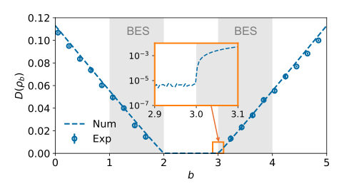
<figcaption class="paper-figure-caption"><b>Fig 2.</b> FIG. 2. Numerical and experimental results for the Horodecki states ρb. A positive value indicates the presence of entangle- ment. The dashed line represents the numerical results of the HS measure. Dots denote the mean expectation values of the GEWs, multiplied by a negative sign, from repeated experi- ments, while the error bars represent the standard deviations. The bound entangled state (BES) regions are shaded in gray.</figcaption>
</figure>
<figure class="paper-figure-card">
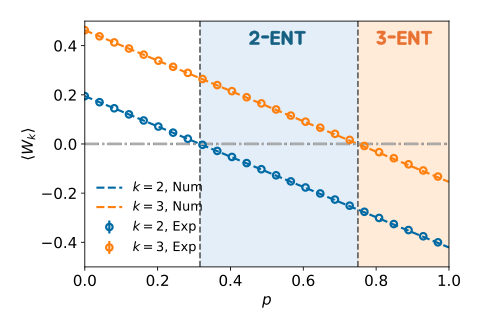
<figcaption class="paper-figure-caption"><b>Fig 3.</b> FIG. 3. Numerical and experimental results for the state ϱ in Eq. (11) under depolarizing noise with different visibility p. Here, Wk represents the constructed GEW for the target state ϱ, and a negative value of ⟨Wk⟩indicates the presence of k-entangled states. The dashed lines correspond to the nu- merical results, while the dots denote the experimental results obtained from repeated experiments. The blue and orange regions indicate the areas of different k-entangled states de- tected by the GEW.</figcaption>
</figure>
<figure class="paper-figure-card">

<figcaption class="paper-figure-caption"><b>Fig 4.</b> FIG. 4. Numerical and experimental results for the noisy state Np(|ψ⟩) = p|ψ⟩⟨ψ| + (1 −p) I</figcaption>
</figure>
<figure class="paper-figure-card">

<figcaption class="paper-figure-caption"><b>Fig 5.</b> FIG. 5. Schematic diagram of convex hull approximation (CHA): (a) Traditional CHA: Random sampling of a large number of extreme points. (b) Dynamic CHA: A small num- ber of extreme points characterized by variational parameters.</figcaption>
</figure>
</div>

<p><strong>Summary.</strong> This paper presents a universal framework to construct geometrically optimal entanglement witnesses (GEWs) by analyzing the geometry of quantum states in Hilbert-Schmidt space. By finding the nearest separable state, the method achieves maximal distinguishability for detecting various forms of entanglement. The framework is shown to be robust against noise and is experimentally validated using a four-qubit NMR system.</p>
<p><strong>Why it may be interesting.</strong> This work provides a powerful, generalizable tool for characterizing quantum correlations, which is fundamental to quantum information theory and understanding quantum resources in complex physical systems.</p>
<details>
<summary>Detailed structure</summary>
<p><strong>Main problem.</strong> The primary challenge is constructing optimal entanglement witnesses (EWs) for arbitrary quantum systems, which is difficult due to the high dimensionality of quantum state spaces.</p>
<p><strong>Main result.</strong> The authors introduce a unified framework for geometrically optimal witnesses (GEWs) that provide maximal distinguishability between a target state and the set of separable states, enabling universal entanglement detection.</p>
<p><strong>Method.</strong> The GEW is constructed by leveraging the geometric properties of the target state relative to the set of separable states in Hilbert-Schmidt space, solved via dynamic convex hull approximation and gradient-based optimization.</p>
<p><strong>Model / system.</strong> The framework is demonstrated using a four-qubit nuclear spin quantum system realized in an NMR platform, allowing for experimental feasibility testing.</p>
<p><strong>Key observables.</strong> Entanglement detection (negative expectation value of the witness), visibility threshold for noise robustness, and the reconstruction of Pauli coefficients from spectral measurements.</p>
<p><strong>Important parameters / regimes.</strong> Noise parameter $p$ (for depolarizing noise), the structure of the entanglement (bipartite, multipartite, high-dimensional), and the Hamiltonian parameters ($J_{ij}, 
u_i$).</p>
<p><strong>Assumptions / limitations.</strong> The optimization process relies on approximating the true global minimizer ($\sigma^\star$) via numerical techniques, which is not guaranteed to be exact.</p>
<p><strong>Figures summary.</strong> Figure 1 schematically illustrates GEWs, showing the convex set $C$ of states lacking desired entanglement structure. Other figures likely compare GEW performance against other witnesses for bound and multipartite entanglement.</p>
<p><strong>Paper structure.</strong> The paper establishes the theoretical framework for GEWs, details the numerical optimization process (CHA/DREAM model), proves theoretical bounds on robustness, and concludes with applications to specific entanglement types (bound, multipartite) and an experimental demonstration on a four-qubit NMR system.</p>
</details>
<details>
<summary>Abstract</summary>
<p>Constructing optimal entanglement witnesses for arbitrary quantum systems remains a formidable challenge, hindered by the structural complexity of high-dimensional quantum state spaces. In this work, we overcome this barrier by introducing a unified framework for constructing geometrically optimal witnesses capable of identifying arbitrary entanglement structures. By leveraging the geometric properties of a target quantum state relative to a specific entanglement structure in Hilbert-Schmidt space, these witnesses are constructed in an efficient and effective manner. Among all nontrivial witnesses, they provide maximal distinguishability between the target state and the set of states without the desired entanglement structure. As a result, our approach enables the universal detection of bipartite, multipartite, and high-dimensional entanglement. To demonstrate its experimental feasibility, we apply the framework to a four-qubit nuclear spin quantum system. Compared to existing methods, our approach offers enhanced noise robustness, broader detection universality, and improved construction efficiency, providing a powerful and versatile tool for advancing the characterization and understanding of entanglement in quantum systems.</p>
</details>
<p><sub><a href="#top">↑ back to top</a></sub></p>

<p><a id="paper-2610.18441"></a></p>
<h3 id="altermagnetic-ground-states-on-the-ammann-beenker-tiling"><a href="http://arxiv.org/abs/2610.18441v1">Altermagnetic Ground States on the Ammann--Beenker Tiling</a></h3>
<p><strong>Authors:</strong> SeungBeom Hong, YunHo Kim, Moon Jip Park, GiBaik Sim<br>
<strong>Type:</strong> theory · <strong>Category:</strong> other · <strong>PDF:</strong> <a href="https://arxiv.org/pdf/2610.18441v1">https://arxiv.org/pdf/2610.18441v1</a><br>
<strong>Analysis basis:</strong> full PDF text, analyzed in chunks
<strong>Topic relevance:</strong> <code>Keldysh / 2PI / non-Gaussian methods</code> <strong>2/5</strong> · <code>analog quantum simulation</code> <strong>1/5</strong></p>
<div class="figure-strip-hint">↔ Scroll figures horizontally</div>
<div class="paper-figures-scroll">
<figure class="paper-figure-card">

<figcaption class="paper-figure-caption"><b>Fig 1.</b> FIG. 1. (a) Parity decomposition in the four-dimensional hypercubic parent lattice. The parity P splits the 24 sublattice vectors α into two groups of eight, drawn as cubes for VA (P = 1) and VB (P = 0). (b) Number of bonds of each class n versus the number of sites N. (c) Graphs in physical space after cut-and-project: GAB formed by the J1 bonds, and GA, GB formed by the J4 bonds.</figcaption>
</figure>
<figure class="paper-figure-card">

<figcaption class="paper-figure-caption"><b>Fig 2.</b> FIG. 2. (a) Ground-state phase diagram of the J1–J4 model for θ ∈[0, π], with phase boundaries at θ ≈0.95 and 1.37. At θ = 0 and π, GA and GB decouple, having an arbitrary relative angle ϕAB. (b) Relative angle ϕAB between the ordering axes nA of GA and nB of GB in spin space. (c) F/F and (d) coplanar AM/N ground states at the θ marked in (a): relaxed spins on GA and GB, projected onto the Sx–Sz plane (top), and their average over each sublattice α on the cubes VA and VB (bottom).</figcaption>
</figure>
<figure class="paper-figure-card">

<figcaption class="paper-figure-caption"><b>Fig 3.</b> FIG. 3. Spin-resolved electronic structure of the canted AM/N state at h = 1, θ = 0.3, and η = 0.05. (a) DOS resolved along ˆz, the ordering axis of GA, whose two channels coincide by [C2x ∥C8z]. (b) DOS resolved along ˆx, the order- ing axis of GB, whose two channels split. (c),(d) LDOS spin splitting ρ+ˆa −ρ−ˆa at ω = −1, normalized to its maximum, for (c) ˆa = ˆz and (d) ˆa = ˆx.</figcaption>
</figure>
<figure class="paper-figure-card">
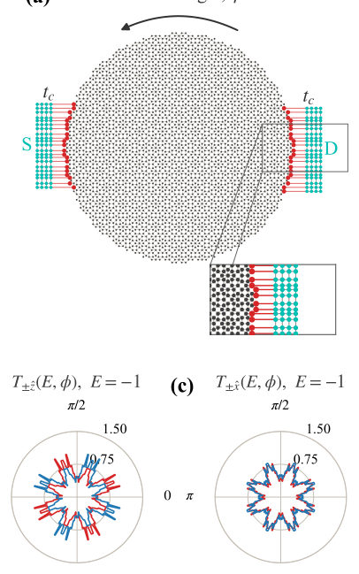
<figcaption class="paper-figure-caption"><b>Fig 4.</b> FIG. 4. Spin-resolved transmission through the canted AM/N state at θ = 0.3, h = 1 and E = −1, plotted radially versus rotation angle ϕ. (a) Device geometry: nonmagnetic square- lattice leads, source S and drain D, coupled by tc to the tiling and rotated jointly by ϕ, with the contact region enlarged in the inset. (b) Transmission T±ˆz resolved along ˆz, the ordering axis of GA, whose two channels are exchanged by [C2x ∥C8z] under ϕ →ϕ+π/4, T+ˆz(ϕ+π/4) = T−ˆz(ϕ). (c) Transmission T±ˆx resolved along ˆx, the ordering axis of GB, whose two channels each preserve C8z.</figcaption>
</figure>
</div>

<p><strong>Summary.</strong> This work determines the exact altermagnetic ground state of a Heisenberg model on the Ammann-Beenker quasicrystal. By analyzing the system's symmetry and coupling structure, the authors establish a coplanar altermagnetic order. Crucially, they confirm this magnetic state by calculating spin-resolved electronic transport, showing characteristic spin-splitting signatures unique to altermagnets in this nonperiodic setting.</p>
<p><strong>Why it may be interesting.</strong> The connection established between the exact magnetic ground state (altermagnetism) and its measurable signature in spin-resolved electronic transport provides a powerful theoretical tool for characterizing exotic magnetic order in low-dimensional or quasiperiodic materials.</p>
<details>
<summary>Detailed structure</summary>
<p><strong>Main problem.</strong> The study aims to identify the exact altermagnetic ground states of a classical Heisenberg model placed on the geometrically complex Ammann-Beenker quasicrystal tiling.</p>
<p><strong>Main result.</strong> The ground state is a coplanar altermagnet characterized by the symmetry $[C_{2x} \parallel C_{8z}]$, which is confirmed by observing axis-selective spin-resolved electronic transport signatures.</p>
<p><strong>Method.</strong> The authors use a combination of analytical methods exploiting the parity structure of the parent lattice and advanced Green's function techniques to calculate spin-resolved transport properties.</p>
<p><strong>Model / system.</strong> The system is a classical Heisenberg model on the Ammann-Beenker tiling, which is derived from a 4D hypercubic lattice. The model is coupled to itinerant electrons via an onsite exchange coupling, allowing for transport calculations.</p>
<p><strong>Key observables.</strong> Spin-resolved transmission function $T_{\pm\hat{a}}(E, \phi)$ and the spin-group symmetry $[C_{2x} \parallel C_{8z}]$.</p>
<p><strong>Important parameters / regimes.</strong> The coupling ratio parameterized by $   heta$ (where $J_1 = \sin 	heta$ and $J_4 = \cos 	heta$), and the contact angle $\phi$.</p>
<p><strong>Assumptions / limitations.</strong> The analysis relies on perturbative expansions in small cantings ($\delta_n$) for determining the ground state structure, and the transport calculations use self-consistent Dyson equations.</p>
<p><strong>Figures summary.</strong> Figures illustrate the AM/N and F/F phases, the coplanar altermagnet structure, and the spin-resolved electronic structure and transmission showing characteristic $\phi$-dependencies.</p>
<p><strong>Paper structure.</strong> The paper first determines the ground state by analyzing the Heisenberg model on the AB tiling using lattice parity and energy minimization. It then extends the analysis to electronic transport, calculating spin-resolved LDOS and transmission to confirm the altermagnetic nature in a nonperiodic setting.</p>
</details>
<details>
<summary>Abstract</summary>
<p>We identify exact altermagnetic ground states of a classical Heisenberg model on a quasicrystal. Considering the Ammann--Beenker tiling as an example, we determine the ground states by exploiting the parity structure of its parent four-dimensional hypercubic lattice. The ground state hosts coplanar altermagnetic order characterized by the preserved spin-group symmetry $[C_{2x}\parallel C_{8z}]$. Without translational symmetry, the momentum-space spin splitting that usually identifies altermagnets is not directly accessible. We instead couple the spins to itinerant electrons and show spin-resolved transport with $g$-wave symmetry, confirming the altermagnetic nature in a nonperiodic system. Our results establish a geometric route to altermagnetic order in quasicrystals, connecting exact magnetic ground states to their spin-resolved transport signatures.</p>
</details>
<p><sub><a href="#top">↑ back to top</a></sub></p>

<p><a id="paper-2610.18365"></a></p>
<h3 id="beyond-gaussian-entanglement-practical-criteria-for-polynomially-excited-quantum-states"><a href="http://arxiv.org/abs/2610.18365v1">Beyond Gaussian Entanglement: Practical Criteria for Polynomially Excited Quantum States</a></h3>
<p><strong>Authors:</strong> Gábor Homa, Richárd Balka, Nikolett Német, András Bodor, Tamás Kiss, András Csordás<br>
<strong>Type:</strong> theory · <strong>Category:</strong> quantum information and computing · <strong>PDF:</strong> <a href="https://arxiv.org/pdf/2610.18365v1">https://arxiv.org/pdf/2610.18365v1</a><br>
<strong>Analysis basis:</strong> full PDF text, analyzed in chunks
<strong>Topic relevance:</strong> <code>Keldysh / 2PI / non-Gaussian methods</code> <strong>2/5</strong> · <code>analog quantum simulation</code> <strong>1/5</strong></p>
<div class="figure-strip-hint">↔ Scroll figures horizontally</div>
<div class="paper-figures-scroll">
<figure class="paper-figure-card">

<figcaption class="paper-figure-caption"><b>Fig 1.</b> Figure 1. Schematic block diagram of a possible experimen- tal implementation of polynomial excitations. First, k input modes in Gaussian thermal states are subjected to a linear unitary Bogoliubov transformation (LUBO). To account for dissipative processes, optional vacuum modes can be added at the input and traced out at the output (green lines). Pho- tons can then be added or subtracted (PA/PS) from selected modes, conditioned on the corresponding measurement out- comes. Finally, another Bogoliubov transformation can be performed.</figcaption>
</figure>
<figure class="paper-figure-card">

<figcaption class="paper-figure-caption"><b>Fig 2.</b> Figure 3. Symplectic eigenvalues ν∗ i , i = 1, 2, 3 after par- tial transpose at time t as a function of t. Thin black line indicates the value 1.</figcaption>
</figure>
<figure class="paper-figure-card">

<figcaption class="paper-figure-caption"><b>Fig 3.</b> Figure 4. The Mercer’s quantity M (2.2) as a function of the polynomial parameter κ for the polynomial Gauss- ian density matrix (5.23). Mercer weights ck and posi- tions (xk, yk, zk) are: ck = (k −i)k, (xk, yk, zk) = (1/kk) · (0.1, 0.8, −0.2) (left panel), and ck = (k + i)k, (xk, yk, zk) = (−1/k)k · (0.1, 0.8, −0.2) (right panel). i is the imaginary unit and k = 1, . . . , 10, GKLC parameters are taken as in Eq.(5.4).</figcaption>
</figure>
<figure class="paper-figure-card">
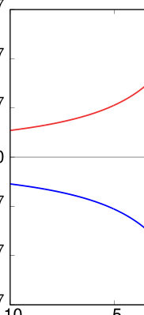
<figcaption class="paper-figure-caption"><b>Fig 4.</b> Figure 5. The Mercer’s quantity M after partial reflec- tion in the third coordinates as a function of the polyno- mial parameter κ for the polynomial Gaussian density ma- trix (5.23). Mercer weights and positions are: ck = (k −i)k, (xk, yk, zk) = (1/kk)(0.1, 0.8, −0.2) (red line) and ck = (k + i)k, (xk, yk, zk) = (−1/k)k(0.1, 0.8, −0.2) (blue line). i is the imaginary unit and k = 1, . . . , 10, GKLC parameters are taken as in Eq. (5.4).</figcaption>
</figure>
<figure class="paper-figure-card">
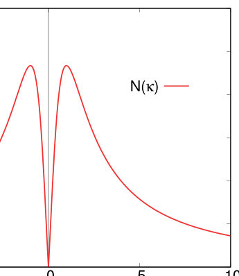
<figcaption class="paper-figure-caption"><b>Fig 5.</b> Figure 6. Negativity N as a function of the polynomial pa- rameter κ for the polynomial Gaussian density matrix (5.23). Partial reflection was in the third coordinates. GKLC param- eters are taken as in Eq. (5.4).</figcaption>
</figure>
</div>

<p><strong>Summary.</strong> This paper develops a powerful mathematical framework to quantify entanglement in continuous-variable quantum systems that go beyond simple Gaussian descriptions. It proves that polynomial excitations either preserve or generate NPT entanglement between subsystems, establishing a robust conservation law. This work connects abstract mathematical theory to practical quantum optics implementations.</p>
<p><strong>Why it may be interesting.</strong> It provides rigorous mathematical tools to analyze non-Gaussian correlations in continuous-variable systems, which is crucial for understanding quantum computation beyond simple Gaussian resource states.</p>
<details>
<summary>Detailed structure</summary>
<p><strong>Main problem.</strong> The paper aims to characterize quantum entanglement in continuous-variable multipartite quantum systems, specifically extending entanglement detection beyond standard Gaussian states.</p>
<p><strong>Main result.</strong> Polynomial excitations preserve or create Negative Partial Transpose (NPT) entanglement between subsystems, meaning the number of NPT entangled pairs cannot decrease under these operations.</p>
<p><strong>Method.</strong> The authors developed an analytical methodology that reduces the infinite-dimensional positivity problem for NPT entanglement detection to a finite-dimensional linear algebra problem for polynomially excited separable pure states.</p>
<p><strong>Model / system.</strong> The study focuses on continuous-variable quantum systems, including those modeled by Gaussian states subjected to polynomial excitations (non-Gaussian operations). Examples include quantum optics and systems involving vibrational modes.</p>
<p><strong>Key observables.</strong> Subsystem entanglement, NPT entanglement (Negative Partial Transpose), and quantum entanglement negativity.</p>
<p><strong>Important parameters / regimes.</strong> The non-locality of the excitation, tuned by a continuous parameter $\kappa$.</p>
<p><strong>Assumptions / limitations.</strong> The analysis is most powerful for states expressible as a finite number of creation and annihilation operators acting on an initial Gaussian state.</p>
<p><strong>Figures summary.</strong> Figure 1 schematically illustrates the experimental implementation of polynomial excitations, combining linear unitary transformations (like beam splitters) with non-Gaussian processes such as photon addition/subtraction.</p>
<p><strong>Paper structure.</strong> The paper establishes the mathematical framework for entanglement detection beyond Gaussian states, proves the conservation law for NPT entanglement under polynomial excitations, applies this to specific examples (like three-mode mixed Gaussian states), and concludes with deriving closed analytical expressions for covariance matrices.</p>
</details>
<details>
<summary>Abstract</summary>
<p>Polynomial excitations consisting of creation and annihilation operators are studied. Subsystem entanglement is proven produced and preserved by such manipulations. NPT entanglement already present between any two subsystems of a general pure or mixed multipartite Gaussian state is preserved under all polynomial excitations. Nevertheless, these excitations can create NPT entanglement between initially separable subsystems, implying that the number of NPT entangled pairs cannot decrease. Polynomial excitations of a wide class of initially separable pure states are considered. For these states, the method reduces the infinite-dimensional positivity problem to a finite-dimensional one: after partial transposition, NPT entanglement is equivalent to a corresponding bilinear representation matrix not being positive semi-definite. Furthermore, using symplectic diagonalization and spectral decomposition, an explicit transformation is constructed between the Fock-space and position representations. It is applied to quadratic excitations of a three-mode mixed Gaussian state. The behavior of the NPT entanglement is tracked between subsystems as a function of a parameter $κ$, which tunes the non-locality of the excitation, and quantum negativity is evaluated. Under a chosen quadratic Hamiltonian, the resulting unitary time evolution maintains NPT entanglement for long intervals, interrupted only by short periods of PPT states. Finally, a closed analytical expression is derived for the covariance matrix of a general quadratic operator for an arbitrary number of degrees of freedom in phase space. Our framework directly connects mathematical foundations, theoretical modeling, and experimentally feasible implementations.</p>
</details>
<p><sub><a href="#top">↑ back to top</a></sub></p>

<p><a id="paper-2610.18350"></a></p>
<h3 id="free-energy-of-non-convex-multi-species-ising-spin-glasses-with-external-fields"><a href="http://arxiv.org/abs/2610.18350v1">Free energy of non-convex multi-species Ising spin glasses with external fields</a></h3>
<p><strong>Authors:</strong> Jeanne Boursier, Jean-Christophe Mourrat<br>
<strong>Type:</strong> theory · <strong>Category:</strong> disordered systems and neural networks · <strong>PDF:</strong> <a href="https://arxiv.org/pdf/2610.18350v1">https://arxiv.org/pdf/2610.18350v1</a><br>
<strong>Analysis basis:</strong> full PDF text, analyzed in chunks
<strong>Topic relevance:</strong> <code>Keldysh / 2PI / non-Gaussian methods</code> <strong>2/5</strong> · <code>analog quantum simulation</code> <strong>1/5</strong></p>
<div class="figure-strip-hint">↔ Scroll figures horizontally</div>
<div class="paper-figures-scroll">
<figure class="paper-figure-card">

<figcaption class="paper-figure-caption"><b>Fig 1.</b> Low-resolution page preview, page 2</figcaption>
</figure>
<figure class="paper-figure-card">
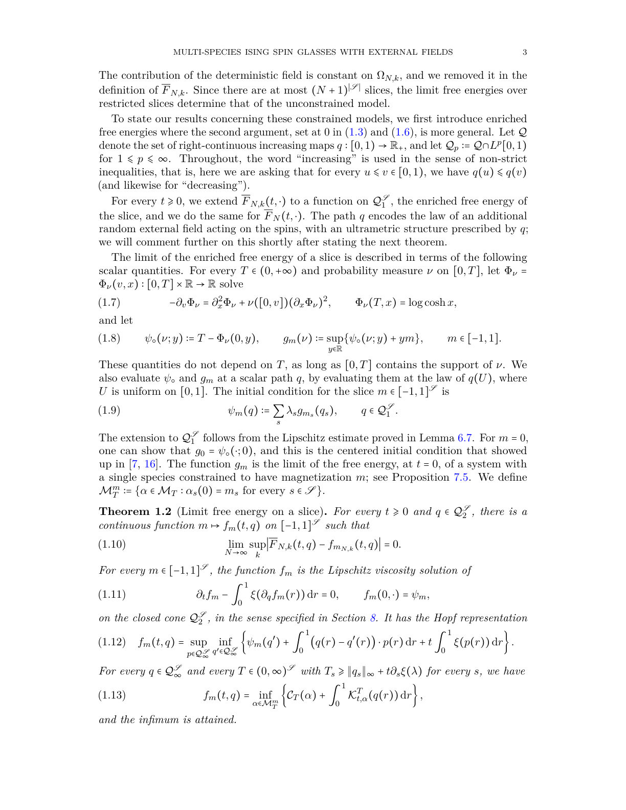
<figcaption class="paper-figure-caption"><b>Fig 2.</b> Low-resolution page preview, page 3</figcaption>
</figure>
<figure class="paper-figure-card">

<figcaption class="paper-figure-caption"><b>Fig 3.</b> Low-resolution page preview, page 4</figcaption>
</figure>
<figure class="paper-figure-card">

<figcaption class="paper-figure-caption"><b>Fig 4.</b> Low-resolution page preview, page 5</figcaption>
</figure>
<figure class="paper-figure-card">

<figcaption class="paper-figure-caption"><b>Fig 5.</b> Low-resolution page preview, page 6</figcaption>
</figure>
</div>

<p><strong>Summary.</strong> This theoretical paper calculates the limit free energy for multi-species Ising spin glasses, overcoming previous limitations by not requiring the assumption of convexity in the Hamiltonian's covariance. It achieves this by reformulating the problem using an 'uninverted' variational formula defined over Brownian martingales, providing a powerful new mathematical tool for disordered systems physics.</p>
<p><strong>Why it may be interesting.</strong> The rigorous mathematical machinery developed for calculating free energies in complex disordered systems, especially the variational approach over martingales, provides powerful tools applicable to analyzing complex energy landscapes in quantum many-body systems.</p>
<details>
<summary>Detailed structure</summary>
<p><strong>Main problem.</strong> The paper aims to identify the limit free energy of mean-field multi-species Ising spin glasses, crucially without assuming convexity of the Hamiltonian's covariance function.</p>
<p><strong>Main result.</strong> The limit free energy is given by an 'uninverted' variational formula expressed as an infimum over Brownian martingales, replacing standard supremum formulations.</p>
<p><strong>Method.</strong> The proof involves relating the free energy to solutions of a Hamilton-Jacobi equation, utilizing Hopf representations, and employing convex duality to derive the final variational form.</p>
<p><strong>Model / system.</strong> The system is a multi-species Ising spin glass defined on $\{-1, 1\}^N$ spins, subjected to Gaussian random interactions and external fields. The analysis focuses on the thermodynamic limit of the free energy.</p>
<p><strong>Key observables.</strong> Limit free energy ($F_N$), enriched free energy, and the solution to the Hamilton-Jacobi equation.</p>
<p><strong>Important parameters / regimes.</strong> Time parameter $t$, external field $h$, and the species proportions $\lambda$.</p>
<p><strong>Assumptions / limitations.</strong> The method avoids assuming convexity of the covariance function $\xi$, although fixing the magnetization allows for local convexity arguments.</p>
<p><strong>Figures summary.</strong> Not specified.</p>
<p><strong>Paper structure.</strong> The structure progresses by first analyzing the free energy on fixed magnetization 'slices' using PDE techniques, then deriving the general variational formula via the Hopf representation, and finally establishing convergence results comparing cascade and branch descriptions.</p>
</details>
<details>
<summary>Abstract</summary>
<p>We identify the limit free energy of mean-field multi-species spin glasses with +/-1 spins, allowing for the presence of external fields, and without assuming any convexity property of the covariance function of the Hamiltonian. The limit is given by an "uninverted" variational formula over Brownian martingales. The proof consists in first identifying the limit free energy of configurations with a fixed magnetization. Once the magnetization is fixed, we can show the convergence of the enriched free energy to the solution of a Hamilton-Jacobi equation. The magnetization constraint is also used to show the convexity of the initial condition in this equation, and this yields a variational representation of the solution, as a Hopf formula. Convex duality then turns this formula into an optimization over martingales whose initial values are the prescribed magnetizations.</p>
</details>
<p><sub><a href="#top">↑ back to top</a></sub></p>

<p><a id="paper-2610.17464"></a></p>
<h3 id="imaging-the-topological-sign-of-a-dirac-mass-with-spin-polarized-tunneling"><a href="http://arxiv.org/abs/2610.17464v1">Imaging the topological sign of a Dirac mass with spin-polarized tunneling</a></h3>
<p><strong>Authors:</strong> Payman Kazemikhah, Ruolun Zhang, Byunghoon Kim, Xiangyu Luo, Zachary Ducorsky, Yu-Peng Zhu, Md. Shafayat Hossain, M. Zahid Hasan<br>
<strong>Type:</strong> theory · <strong>Category:</strong> other · <strong>PDF:</strong> <a href="https://arxiv.org/pdf/2610.17464v1">https://arxiv.org/pdf/2610.17464v1</a><br>
<strong>Analysis basis:</strong> full PDF text, analyzed in chunks
<strong>Topic relevance:</strong> <code>quantum measurements</code> <strong>2/5</strong> · <code>analog quantum simulation</code> <strong>1/5</strong></p>
<div class="figure-strip-hint">↔ Scroll figures horizontally</div>
<div class="paper-figures-scroll">
<figure class="paper-figure-card">

<figcaption class="paper-figure-caption"><b>Fig 1.</b> FIG. 1. Local readout of the Dirac-mass sign. (a) A spin-polarized tip with reversible polarization ±Pz probes a C3 axis of a magnetic topological-insulator surface. Domains with opposite exchange masses M have opposite Berry curvatures, and their boundary hosts a chiral mode with in-plane spin perpendicular to the wall. (b) Massive Dirac spectra for the two domains, colored by ⟨σz⟩. The band-edge spin reverses with M; the dashed line marks the zeroth Landau level, E0 = −M for eB &gt; 0. (c) Rotation-axis selection rule. For the band-edge state αpz↑+βp+↓, the m = 1 component vanishes on the C3 axis, so an axial tip couples to a fully polarized state, ceff z = 1, independent of the orbital...</figcaption>
</figure>
<figure class="paper-figure-card">

<figcaption class="paper-figure-caption"><b>Fig 2.</b> FIG. 2. On-axis spin equals the Hall sign. Selection rule in a C3v spin–orbital model (p orbitals, spin–orbit and orbital Rashba coupling, exchange along z, SM S6). (a) Deviation 1 −|ceff z | of the tip polarization of the upper band edge along the cell diagonal for three tip heights. It vanishes on the C3 axes. The zero at the bridge site reflects the model’s twofold axis. (b) Tip asymmetry near the gap on and off the axis, and orbital-traced. Dashed, Eq. (5) with δ = −0.23. The orbital-traced polarization has the opposite sign at both edges (+0.16, −0.48). (c) For 250 random parameter sets, the on-axis spin of the upper edge always equals sgn Ωocc. The orbital-traced spin has either sign.</figcaption>
</figure>
<figure class="paper-figure-card">
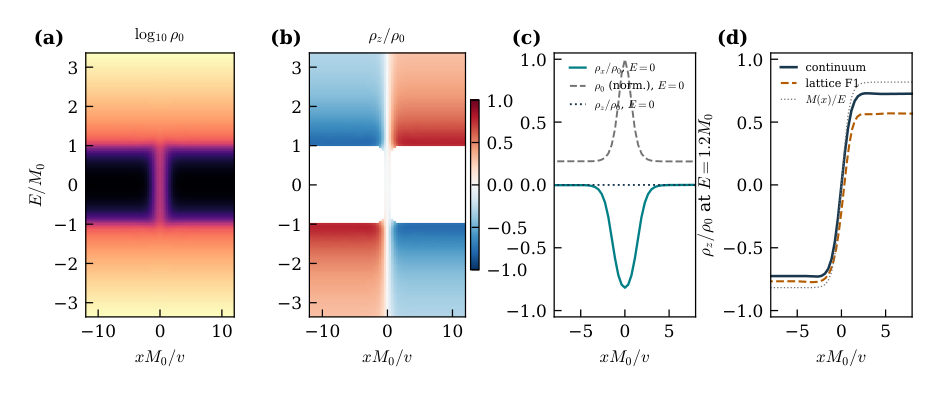
<figcaption class="paper-figure-caption"><b>Fig 3.</b> FIG. 3. Domain walls as self-calibrating controls. Domain walls in the doubler-free continuum model (M0 = 0.3, wall width 0.9 v/M0, η = 0.1M0). (a) log10 ρ0 with the in-gap Jackiw–Rebbi mode. (b) ρz/ρ0, exactly antisymmetric about the wall. (c) At E = 0 the mode has spin perpendicular to the wall (ρx/ρ0 = −0.82) and is invisible to a z tip. (d) Cuts at E = 1.2M0 for the continuum (±0.73) and lattice F1 (+0.57, −0.77). The asymmetry of F1 comes from its time-reversal-odd regulator.</figcaption>
</figure>
<figure class="paper-figure-card">

<figcaption class="paper-figure-caption"><b>Fig 4.</b> FIG. 4. Field route, decision statistics, and tip-induced mass. (a) Landau levels for eB &gt; 0 (lower) and eB &lt; 0 (upper) for the continuum with curvature (solid) and lattice F1 (dotted), M = 0.3, 2πϕ = 0.031, with E0 = −sgn(eB)(M −β|eB|). (b) Probability of a correct decision at 99% confidence, Eq. (7) (lines) and Monte Carlo (circles), M = 15 meV. (c) Bias from a tip-induced mass in fits that use one side of the gap, 1/E only versus joint fit. The band marks ±1 standard error at σ = 0.01G0.</figcaption>
</figure>
</div>

<p><strong>Summary.</strong> This work presents a theoretical framework to image the sign of the Dirac mass in topological materials using spin-polarized tunneling spectroscopy. By exploiting crystalline symmetries and analyzing spin asymmetries, the authors show that the sign of the Berry curvature can be determined locally. This capability allows researchers to map out where the topological character changes within a material, which is a significant advance over merely detecting the presence of a gap.</p>
<p><strong>Why it may be interesting.</strong> The technique provides a powerful, real-space diagnostic tool to map out the topological character (sign of the mass) of materials, moving beyond simple gap detection.</p>
<details>
<summary>Detailed structure</summary>
<p><strong>Main problem.</strong> The primary goal is to develop a local spectroscopic technique to determine the topological sign of a Dirac mass ($M$) in magnetic topological surfaces, which is currently inaccessible using standard gap magnitude measurements.</p>
<p><strong>Main result.</strong> The topological sign of the mass can be determined by measuring the spin asymmetry in tunneling spectroscopy, particularly when exploiting crystalline rotation symmetry or analyzing the zeroth Landau level.</p>
<p><strong>Method.</strong> The authors use theoretical modeling based on spin-polarized tunneling spectroscopy (STM) applied to surface Hamiltonians, analyzing spin asymmetries and domain wall physics.</p>
<p><strong>Model / system.</strong> The study focuses on magnetic topological surfaces exhibiting a Dirac cone gapped by an exchange mass $M$. Models include tight-binding descriptions on $C_3$ axes and continuum models for domain walls.</p>
<p><strong>Key observables.</strong> Tunneling asymmetry ($
ho_W$), the sign of the occupied-band Berry curvature ($\Omega_{ ext{occ}}$), and the energy of the zeroth Landau level ($E_0$).</p>
<p><strong>Important parameters / regimes.</strong> The mass $M$, the tip polarization $P$, and the crystalline symmetry axis ($C_3$ axis).</p>
<p><strong>Assumptions / limitations.</strong> The method relies on the existence of crystalline rotation symmetry ($C_n$ axis) to enforce spin polarization at the band edge, and the analysis assumes the tip probes the band-edge state.</p>
<p><strong>Figures summary.</strong> Figures illustrate the readout mechanism using spin-polarized tips on $C_3$ axes, showing domain-dependent Berry curvature signs, and demonstrate the Jackiw–Rebbi mode at domain walls with characteristic antisymmetry.</p>
<p><strong>Paper structure.</strong> The paper establishes the theoretical limitations of current spectroscopy, develops the spin-polarized tunneling measurement protocol using symmetry constraints, and validates the method using domain wall physics and Landau level analysis.</p>
</details>
<details>
<summary>Abstract</summary>
<p>A Dirac mass is characterized not only by its magnitude but also by its sign, which influences the Berry curvature, Hall response, and the propagation direction of chiral boundary modes. However, local spectroscopy of magnetic topological surfaces has so far accessed only the gap magnitude $|M|$. Here we show how the topological sign of $M$ can be determined locally. We first establish the sign information that spin-resolved tunneling can access and the reference required to obtain an absolute Hall sign. Although spin--orbital entanglement generally obscures the relation between measured spin and Dirac pseudospin, crystalline rotation symmetry alleviates this ambiguity at the band edge. On a $C_3$ axis, an axial tip couples to a fully spin-polarized state whose tunneling asymmetry directly reveals the sign of the occupied-band Berry curvature, independent of orbital composition. We further show that the zeroth Landau level provides an independent mass-sign measurement with an unpolarized tip, while opposite domains and their chiral domain-wall modes provide self-consistency checks. These results pave the way for imaging the locations where the topological character changes within a material, rather than merely identifying where a spectral gap appears.</p>
</details>
<p><sub><a href="#top">↑ back to top</a></sub></p>

<p><a id="paper-2610.18722"></a></p>
<h3 id="superexchange-coupling-between-a-dilute-gd3-probe-and-orphan-spins-in-a-valence-bond-glass"><a href="http://arxiv.org/abs/2610.18722v1">Superexchange coupling between a dilute Gd3+ probe and orphan spins in a valence-bond glass</a></h3>
<p><strong>Authors:</strong> Patrick Colgan, Artur Solodovnyk, Jeremy P. Carlo, Scott Dietrich<br>
<strong>Type:</strong> experiment · <strong>Category:</strong> disordered systems and neural networks · <strong>PDF:</strong> <a href="https://arxiv.org/pdf/2610.18722v1">https://arxiv.org/pdf/2610.18722v1</a><br>
<strong>Analysis basis:</strong> full PDF text, analyzed in chunks
<strong>Topic relevance:</strong> <code>quantum measurements</code> <strong>2/5</strong> · <code>analog quantum simulation</code> <strong>1/5</strong></p>
<div class="figure-strip-hint">↔ Scroll figures horizontally</div>
<div class="paper-figures-scroll">
<figure class="paper-figure-card">

<figcaption class="paper-figure-caption"><b>Fig 1.</b> FIG. 1. (a) Ordered double-perovskite structure of Ba2(GdxY1−x)B′O6 (B′ = Nb or Mo), with the magnetic Gd3+ dopant dilute on the Y3+ site. (b) Low-angle zoom of the (111) superlattice reflection that marks B-site ordering, beside the (200) fundamental reflection. (c) Powder x-ray diffraction of the x = 0.05 samples (Nb, top; Mo, bottom), indexed to single-phase cubic Fm¯3m. Asterisks in (b) and (c) mark reflections of a minor unreacted Y2O3 second phase, much stronger in the Nb sample; the low-angle (211) line in (b) is resolved only in the niobate.</figcaption>
</figure>
<figure class="paper-figure-card">

<figcaption class="paper-figure-caption"><b>Fig 2.</b> FIG. 2. Broadband field–frequency resonance maps at 5 K for the (a) niobate and (b) molybdate hosts at 5% Gd; the panel titles give the full composition Ba2(Gd0.05Y0.95)B′O6 (B′ = Nb, Mo), with the B′-site cation highlighted. The sequential color scale is the transmission ∆S21(B, f) after subtracting the non-resonant CPW background determined column-by-column in the lineshape fit (Sec. II E), running from white (no resonant response) to navy (deepest absorption). The main Gd3+ resonance is the band that disperses linearly from the origin; the dashed line is f = g (µB/h) B with the fitted g (1.992 for Nb, 1.979 for Mo) from the column-by-column analysis, and the dotted line marks the...</figcaption>
</figure>
<figure class="paper-figure-card">

<figcaption class="paper-figure-caption"><b>Fig 3.</b> Figure 3 shows representative field-swept absorption spectra ∆|S21|(B) for the Nb and Mo hosts at three fre- quencies, together with the two-Dysonian fits. Each spec- trum is well described by a main Gd3+ resonance and a weaker half-field satellite on a smooth non-resonant back- ground, with comparable fit quality across the resolved frequency range and for both hosts. At fixed frequency the Mo-host resonance is visibly broader than that of the Nb host.</figcaption>
</figure>
<figure class="paper-figure-card">
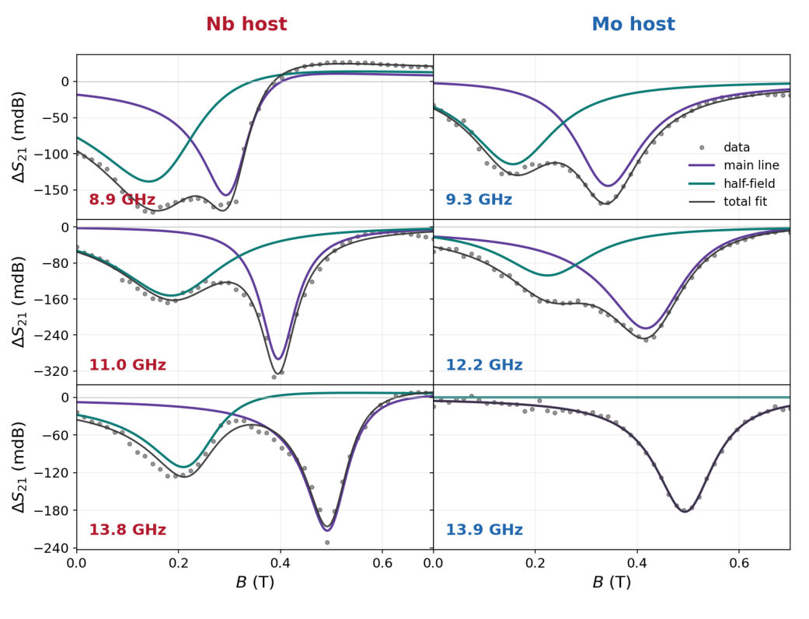
<figcaption class="paper-figure-caption"><b>Fig 4.</b> FIG. 3. Field-swept absorption ∆|S21|(B) at 5 K for the x = 0.05 Nb host (left column) and Mo host (right column) at three representative frequencies. Grey points are data. Curves show the two-Dysonian fit decomposed into the main Gd3+ line, the half-field satellite, and their sum.</figcaption>
</figure>
<figure class="paper-figure-card">
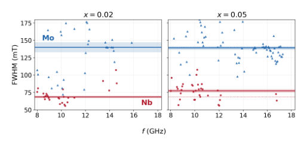
<figcaption class="paper-figure-caption"><b>Fig 5.</b> FIG. 4. Main-line full width at half maximum versus fre- quency at 5 K, for 2% Gd (left) and 5% Gd (right), Nb (red) and Mo (blue). Points are per-column widths; solid lines are robust-median values with ±1 standard-error bands. Dot- ted lines in the right panel mark the 2% medians. From 2% to 5% the Nb width rises by a resolved ≈8 mT (Gd– Gd dipolar broadening), while the Mo width is unchanged (concentration-independent host coupling). Because the two concentrations of a given host are analyzed by the identical procedure, the background-modeling systematic (±9 mT Nb, ±16 mT Mo) shifts both by the same amount and so drops out of the 2%-to-5% difference, even though it remains in each...</figcaption>
</figure>
</div>

<p><strong>Summary.</strong> This experimental work uses Electron Paramagnetic Resonance on a dilute $  ext{Gd}^{3+}$ probe to investigate the magnetic coupling within a valence-bond-glass material. By analyzing both the static linewidth and the dynamic collapse of a satellite transition, the authors successfully attribute the coupling to a superexchange interaction rather than simple dipolar coupling. This provides a detailed, site-specific picture of the magnetic dynamics in these complex correlated materials.</p>
<p><strong>Why it may be interesting.</strong> The use of EPR to distinguish between static (linewidth) and dynamic (satellite collapse) coupling channels in a complex magnetic state provides a powerful, site-resolved spectroscopic tool for understanding glassy magnetism.</p>
<details>
<summary>Detailed structure</summary>
<p><strong>Main problem.</strong> The study aims to characterize the magnetic coupling and dynamics of elusive 'orphan' spins residing within a valence-bond-glass state.</p>
<p><strong>Main result.</strong> The excess linewidth in the magnetic host is determined to arise from a transferred f-d superexchange coupling ($J \approx 0.2 	ext{ K}$), while the half-field satellite collapse probes the dynamic dephasing of these orphan moments.</p>
<p><strong>Method.</strong> Electron Paramagnetic Resonance (EPR) spectroscopy using broadband coplanar-waveguide transmission is employed to probe the dilute $    ext{Gd}^{3+}$ probe spin.</p>
<p><strong>Model / system.</strong> The system is the double perovskite $   ext{Ba}_2   ext{YMoO}_6$, which exhibits a valence-bond-glass state containing residual paramagnetic 'orphan' spins. The measurement is compared against the isostructural, nonmagnetic control $   ext{Ba}_2   ext{YNbO}_6$.</p>
<p><strong>Key observables.</strong> Linewidth (static coupling measure), half-field satellite collapse (dynamic dephasing channel), and the $  ext{g}$-factor.</p>
<p><strong>Important parameters / regimes.</strong> The coupling strength $J \approx 0.2 	ext{ K}$; the temperature is fixed at $5 	ext{ K}$.</p>
<p><strong>Assumptions / limitations.</strong> The analysis assumes the $   ext{g}$-factor remains constant and that the observed half-field collapse is due to dynamical dephasing.</p>
<p><strong>Figures summary.</strong> Figures show structural confirmations (XRD) and 2D maps of the $   ext{S}_{21}$ signal, illustrating the resonance features for both the main line and the half-field satellite in the $   ext{Mo}$ and $  ext{Nb}$ hosts.</p>
<p><strong>Paper structure.</strong> The paper systematically compares the $    ext{Mo}$ (magnetic) and $   ext{Nb}$ (nonmagnetic) hosts using EPR. It first rules out simple dipolar coupling, then quantifies the excess width via the static linewidth, and finally analyzes the half-field satellite collapse to characterize the dynamic coupling mechanisms.</p>
</details>
<details>
<summary>Abstract</summary>
<p>The valence-bond-glass state of the 4d^1 double perovskite Ba2YMoO6 combines Mo^5+ singlets with residual paramagnetic "orphan" spins whose coupling is hard to reach with bulk probes. We probe them by electron paramagnetic resonance of a dilute Gd^3+ ion on the Y^3+ site via broadband coplanar-waveguide transmission at 5 K. The isostructural nonmagnetic niobate Ba2YNbO6, doped with the same Gd^3+ probe, is a fixed-lattice control. The Gd^3+ linewidth nearly doubles in the magnetic host. Dipolar coupling to the sparse orphans is nearly an order of magnitude too weak; the excess is instead reproduced by a transferred f-d superexchange of J ~ 0.2 K, so the width is a static measure of orphan-spin coupling. The half-field (Delta m_S = +/-2) satellite collapses in the magnetic host, a dynamical dephasing channel, while the unchanged g-factor marks a zero-mean random internal field. Together the two channels probe the coupling and dynamics of valence-bond-glass orphan spins.</p>
</details>
<p><sub><a href="#top">↑ back to top</a></sub></p>

<p><a id="paper-2610.17222"></a></p>
<h3 id="pairing-from-repulsive-interactions-in-twisted-wse2-from-functional-renormalization"><a href="http://arxiv.org/abs/2610.17222v1">Pairing from repulsive interactions in twisted WSe2 from functional renormalization</a></h3>
<p><strong>Authors:</strong> Hannes Braun, Dumitru Călugăru, Pietro M. Bonetti, Haoyu Hu, Yan Zhang, Yi Jiang, Quansheng Wu, Kin Fai Mak, Jie Shan, B. Andrei Bernevig, Michael M. Scherer, Laura Classen<br>
<strong>Type:</strong> theory · <strong>Category:</strong> strongly correlated electrons · <strong>PDF:</strong> <a href="https://arxiv.org/pdf/2610.17222v1">https://arxiv.org/pdf/2610.17222v1</a><br>
<strong>Analysis basis:</strong> full PDF text, analyzed in chunks
<strong>Topic relevance:</strong> <code>Keldysh / 2PI / non-Gaussian methods</code> <strong>2/5</strong></p>
<div class="figure-strip-hint">↔ Scroll figures horizontally</div>
<div class="paper-figures-scroll">
<figure class="paper-figure-card">
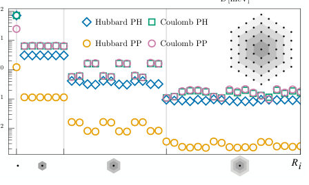
<figcaption class="paper-figure-caption"><b>Fig 1.</b> FIG. 1. (a) Band dispersion of the three topmost moiré bands in valley K at two values of the displacement field D. Bands in valley K′ are related by time reversal. (b) Density of states (DOS) of topmost band Eσ 1 at filling ν = −1 as a function of D. (c) Range of projected Coulomb and Hubbard interactions: maximal magnitude of the Fourier-transformed bare interaction V X,ii σσ′ in particle-hole (X=PH) and particle- particle (X=PP) channels at distance Ri (Eq. (S7.21) in [76]) for D = 0 meV and 10/ϵ = 1.6 (Coulomb) or α = 1.67 (Hub- bard). The vectors Ri are defined on the triangular moiré lattice numbered along hexagonal shells with increasing dis- tance as depicted in the inset, and...</figcaption>
</figure>
<figure class="paper-figure-card">
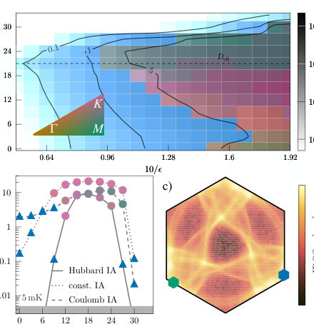
<figcaption class="paper-figure-caption"><b>Fig 2.</b> FIG. 2. (a) FRG phase diagram of interaction strength 10/ϵ and displacement field D. IVC-SDW instabilities are rep- resented by the colors shown in the moiré BZ inset, which represent the IVC-SDW wave vector. Superconducting in- stabilities are represented by the blue tones. The opacity of the coloring represents the temperature of the emerging instability Tc. (b) Line-cut through the phase diagram at 10/ϵ = 1.36 and comparable α = 0.5 for the three differ- ent initial interactions, i.e., Coulomb/Hubbard/constant as described in the main text. Circles represent IVC-SDW in- stabilities, triangles superconducting instabilities. Notably, for the projected Coulomb interaction, the superconducting...</figcaption>
</figure>
<figure class="paper-figure-card">
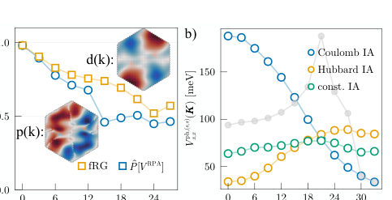
<figcaption class="paper-figure-caption"><b>Fig 3.</b> FIG. 3. (a) Weight s of the pairing eigenfunction ∆(k) = s · d(k)t0+(1−s)·p(k)tz with Pauli matrices in spin/valley space ti = iσiσy for 10/ϵ = 0.8 extracted from FRG and from an IVC-spin-fluctuation approach which projects the RPA vertex into the pairing channel ˆP[V RPA]. Inset: d(k) and p(k) in the Brillouin zone. (b) The RPA-dressed interactions in the IVC- SDW channel for Coulomb/Hubbard/constant interaction as a function of D. The DOS is shown in gray for reference.</figcaption>
</figure>
</div>

<p><strong>Summary.</strong> This work theoretically analyzes superconductivity in twisted WSe2, finding that repulsive interactions drive the system into a mixed d-wave/p-wave superconducting state. The pairing mechanism is robustly attributed to inter-valley coherent spin fluctuations. By comparing continuum models with realistic Wannier models using FRG and RPA, the authors reconcile theory with experimental observations across varying strain fields.</p>
<p><strong>Why it may be interesting.</strong> The detailed theoretical mapping of competing orders (SDW/SC) and the identification of spin fluctuations as the pairing glue provides a rich theoretical framework applicable to other correlated 2D van der Waals heterostructures.</p>
<details>
<summary>Detailed structure</summary>
<p><strong>Main problem.</strong> The study investigates the superconducting instability arising from repulsive interactions in twisted bilayer WSe2, aiming to identify the microscopic pairing mechanism.</p>
<p><strong>Main result.</strong> The pairing instability is driven by inter-valley coherent spin fluctuations, leading to a mixed d-wave singlet and p-wave triplet superconducting state.</p>
<p><strong>Method.</strong> The analysis employs advanced theoretical techniques including Hartree-Fock, Random Phase Approximation (RPA), and Functional Renormalization Group (FRG) calculations.</p>
<p><strong>Model / system.</strong> The system is twisted bilayer WSe2, analyzed using continuum models derived from first principles and compared against realistic three-orbital Wannier models (e.g., 3Tri model).</p>
<p><strong>Key observables.</strong> Superconducting critical temperature (Tc), pairing symmetry (d-wave/p-wave), and the nature of the pairing glue (spin fluctuations).</p>
<p><strong>Important parameters / regimes.</strong> Hole filling $\nu = -1$, twist angle $3.65^\circ$, and the displacement field ($D$) which controls the phase diagram.</p>
<p><strong>Assumptions / limitations.</strong> The analysis often compares results from different interaction approximations (Hubbard vs. Coulomb) and relies on projecting RPA fluctuations onto the pairing channel.</p>
<p><strong>Figures summary.</strong> Figures illustrate the phase diagram showing coexisting SDW and superconducting regions, and plots detail the evolution of Tc and the structure of the leading pairing eigenfunction.</p>
<p><strong>Paper structure.</strong> The paper systematically analyzes the phase diagram using multiple theoretical tools (HF, RPA, FRG) to map out competing ordered states (SDW vs. SC) and pin down the pairing mechanism by comparing results from different interaction models.</p>
</details>
<details>
<summary>Abstract</summary>
<p>Motivated by the observation of superconductivity in twisted bilayer WSe$_2$ over an extended range of displacement fields, reaching from the correlated insulator down to zero field, we analyze the correlated electron phases of this system at hole filling $ν= -1$ and twist angle $3.65^\circ$ using Hartree--Fock, random phase approximation, and functional renormalization group calculations. We derive a continuum model with gate-screened Coulomb interaction from first principles and compare its instabilities to those of a realistic three-orbital Wannier model with a Hubbard interaction and an artificial single-orbital Hubbard model. In both cases, we find a superconducting instability of mixed $d$-wave singlet and $p$-wave triplet character, arising adjacent to inter-valley-coherent spin-density-wave order in the phase diagram spanned by displacement field and interaction strength. Our additional analysis of the pairing mechanism points to inter-valley coherent spin fluctuations as the pairing glue. The extent of the pairing regime and the associated critical temperatures depend on the model input, and we trace differences to the interaction range entering the projected interaction. Within the continuum model, the gate-screened Coulomb interaction yields pairing down to zero displacement field, bringing theory into agreement with experiment.</p>
</details>
<p><sub><a href="#top">↑ back to top</a></sub></p>

<p><a id="paper-2610.17225"></a></p>
<h3 id="quantum-reference-frames-in-terms-of-tetrads"><a href="http://arxiv.org/abs/2610.17225v1">Quantum Reference Frames in terms of Tetrads</a></h3>
<p><strong>Authors:</strong> Jeremy Butterfield, Daniel A. Turolla Vanzella<br>
<strong>Type:</strong> theory · <strong>Category:</strong> other · <strong>PDF:</strong> <a href="https://arxiv.org/pdf/2610.17225v1">https://arxiv.org/pdf/2610.17225v1</a><br>
<strong>Analysis basis:</strong> full PDF text, analyzed in chunks
<strong>Topic relevance:</strong> <code>quantum measurements</code> <strong>2/5</strong></p>
<div class="figure-strip-hint">↔ Scroll figures horizontally</div>
<div class="paper-figures-scroll">
<figure class="paper-figure-card">

<figcaption class="paper-figure-caption"><b>Fig 1.</b> Low-resolution page preview, page 2</figcaption>
</figure>
<figure class="paper-figure-card">

<figcaption class="paper-figure-caption"><b>Fig 2.</b> Low-resolution page preview, page 3</figcaption>
</figure>
<figure class="paper-figure-card">
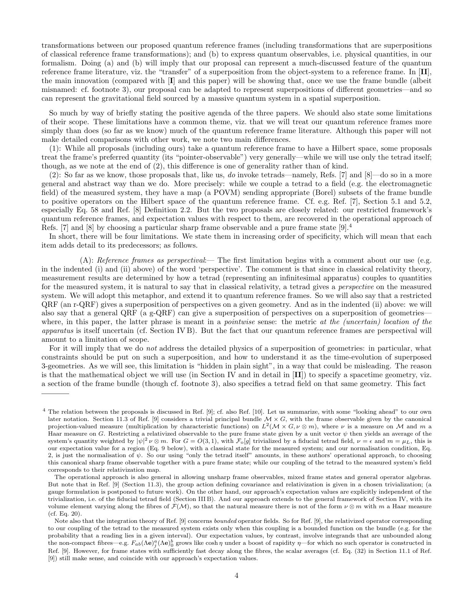
<figcaption class="paper-figure-caption"><b>Fig 3.</b> Low-resolution page preview, page 4</figcaption>
</figure>
<figure class="paper-figure-card">

<figcaption class="paper-figure-caption"><b>Fig 4.</b> Low-resolution page preview, page 5</figcaption>
</figure>
<figure class="paper-figure-card">
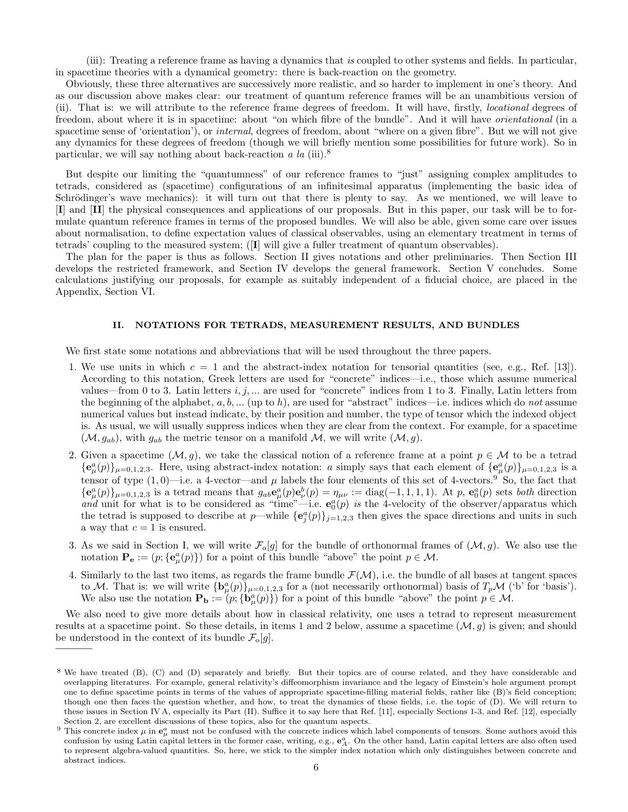
<figcaption class="paper-figure-caption"><b>Fig 5.</b> Low-resolution page preview, page 6</figcaption>
</figure>
</div>

<p><strong>Summary.</strong> This paper develops a quantum mechanical description of a reference frame by treating it as a tetrad field defined over spacetime. It rigorously distinguishes between two physical scenarios: measuring superpositions of perspectives on a fixed geometry versus measuring superpositions of geometries themselves. The formalism uses advanced differential geometry concepts like frame bundles to achieve this distinction.</p>
<p><strong>Why it may be interesting.</strong> It provides a rigorous mathematical framework for how quantum systems can encode information about their own measurement apparatus or the background spacetime geometry, which is crucial for quantum gravity and quantum field theory in curved spacetime.</p>
<details>
<summary>Detailed structure</summary>
<p><strong>Main problem.</strong> The paper adapts the relativistic concept of a reference frame, treated as a tetrad, to the quantum mechanical setting.</p>
<p><strong>Main result.</strong> It formalizes the state of a Quantum Reference Frame (QRF) using the language of fibre bundles, distinguishing between superpositions of perspectives on a single geometry versus superpositions of geometries themselves.</p>
<p><strong>Method.</strong> The formalism is built upon the mathematical structure of the orthonormal frame bundle ($F_o[g]$) versus the general frame bundle ($F(M)$) over spacetime.</p>
<p><strong>Model / system.</strong> The system is the Quantum Reference Frame (QRF), whose state is proposed to be a complex amplitude assignment over the set of possible tetrads at a spacetime point.</p>
<p><strong>Key observables.</strong> The state itself, which is a complex function on the set of tetrads; expectation values of physical observables measured by the QRF.</p>
<p><strong>Important parameters / regimes.</strong> The choice between the orthonormal frame bundle (for fixed geometry) and the general frame bundle (for variable geometry).</p>
<p><strong>Assumptions / limitations.</strong> The core assumption is that the state is an assignment of amplitudes to tetrads, and the mathematical framework relies on defining invariant volume elements on the frame bundle.</p>
<p><strong>Figures summary.</strong> Not specified in the notes.</p>
<p><strong>Paper structure.</strong> The work is conceptual, emphasizing the contrast between two mathematical frameworks: one for a fixed geometry (superposition of perspectives) and one for a general manifold (superposition of geometries).</p>
</details>
<details>
<summary>Abstract</summary>
<p>We adapt to the context of quantum theory the treatment, familiar in relativity theory, of a reference frame as a tetrad. Since a tetrad is a set of four orthonormal vectors at a spacetime point, it encodes a timelike direction, three orthogonal spatial directions, and units; and so it gives a configuration in spacetime (a spatial orientation and state of motion) of an idealized infinitesimal apparatus (<code>rulers and a clock"). So a natural</code>first guess" is that the state of a quantum reference frame should be an assignment of complex amplitudes to a set of tetrads. We develop this idea, in terms of bundles over spacetime of bases of the tangent spaces.   This paper is a companion to two other papers. It emphasises the main conceptual aspects of our proposal, while the other two papers give physical details. It also explains the main contrast between those two papers. Namely: (i) the first considers a single spacetime geometry, so that a quantum reference frame, on our proposal, gives a superposition of perspectives on that geometry; while (ii) the second considers the spacetime manifold with no geometry given a priori, which will imply that a quantum reference frame, on our proposal, can describe a superposition of perspectives on a superposition of geometries---not ``just" a superposition of perspectives on a single geometry. The main mathematical idea for representing this contrast will be choosing between (i) the orthonormal frame bundle, for a given spacetime geometry; (ii) the frame bundle in the usual sense of containing all bases of all spacetime points' tangent spaces.</p>
</details>
<p><sub><a href="#top">↑ back to top</a></sub></p>

<p><a id="paper-2610.18028"></a></p>
<h3 id="ergotropy-of-multipartite-entangled-states-in-the-quantum-atmosphere"><a href="http://arxiv.org/abs/2610.18028v1">Ergotropy of multipartite entangled states in the quantum atmosphere</a></h3>
<p><strong>Authors:</strong> Ruopu Sun, Xiaofen Huang<br>
<strong>Type:</strong> theory · <strong>Category:</strong> statistical mechanics · <strong>PDF:</strong> <a href="https://arxiv.org/pdf/2610.18028v1">https://arxiv.org/pdf/2610.18028v1</a><br>
<strong>Analysis basis:</strong> full PDF text, analyzed in chunks
<strong>Topic relevance:</strong> <code>Keldysh / 2PI / non-Gaussian methods</code> <strong>1/5</strong> · <code>correlated / nonlocal dissipation</code> <strong>1/5</strong> · <code>driven-dissipative phase transition</code> <strong>1/5</strong> · <code>methods for driven-dissipative</code> <strong>1/5</strong> · <code>non-equilibrium universality</code> <strong>1/5</strong> · <code>scars &amp; prethermalization</code> <strong>1/5</strong></p>
<div class="figure-strip-hint">↔ Scroll figures horizontally</div>
<div class="paper-figures-scroll">
<figure class="paper-figure-card">

<figcaption class="paper-figure-caption"><b>Fig 1.</b> FIG. 1. Schematic of ergotropy evolution for a tripartite en- tangled state in the black-hole quantum atmosphere. (a) In the asymptotic flat region the initial state possesses maximal ergotropy. (b) Via the Hawking (Bogoliubov) transformation, the accelerated modes B, C split into an accessible Region I outside the horizon and a causally inaccessible Region II in- side it, while Alice stays in the flat region. (c) The four I/II combinations yield four reduced states whose ergotropy forms two degenerate pairs.</figcaption>
</figure>
<figure class="paper-figure-card">
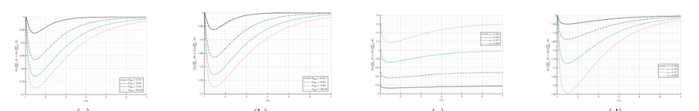
<figcaption class="paper-figure-caption"><b>Fig 2.</b> FIG. 2. The ergotropy of the ρGHZ ABICI, ρGHZ ABICII, ρGHZ ABIICI, and ρGHZ ABIICII as a function of the normalized radial distance r/rh in the black hole quantum atmosphere. (a),(b) Fixed at α = 1/ √</figcaption>
</figure>
<figure class="paper-figure-card">

<figcaption class="paper-figure-caption"><b>Fig 3.</b> FIG. 3. The ergotropy of three bipartite subsystems of the W state as a function of normalized radial distance r/rh under differ- ent Hartle-Hawking constants DHH. Graph (a): ergotropy E(ρW ABICI, H); Graph (b): ergotropy E(ρW ABICII, H) = E(ρW ABIICI, H); Graph (c): ergotropy E(ρW ABIICII, H).</figcaption>
</figure>
</div>

<p><strong>Summary.</strong> This theoretical paper studies the extractable work, or ergotropy, of GHZ and W entangled states near a black hole horizon. It finds that the way work is redistributed depends fundamentally on the type of entanglement, showing distinct mathematical signatures for GHZ versus W correlations. The results highlight that local Hawking effects are governed by both the entanglement structure and the radial position relative to the black hole.</p>
<p><strong>Why it may be interesting.</strong> It connects fundamental concepts from quantum information (entanglement structure) with gravitational thermodynamics (Hawking radiation/curved spacetime), providing a novel thermodynamic signature for entanglement in extreme environments.</p>
<details>
<summary>Detailed structure</summary>
<p><strong>Main problem.</strong> The paper investigates how the extractable work (ergotropy) of multipartite entangled states is redistributed in the quantum atmosphere of a Schwarzschild black hole due to Hawking-induced thermalization.</p>
<p><strong>Main result.</strong> The ergotropy structures of GHZ and W states are qualitatively different, showing distinct mathematical relations (e.g., linear averaging for W states) and different dependencies on gravitational parameters.</p>
<p><strong>Method.</strong> The analysis uses quantum thermodynamics, calculating ergotropy based on the energy eigenbasis of the Hamiltonian applied to reduced density matrices derived from the entangled states.</p>
<p><strong>Model / system.</strong> The system models tripartite entangled states (GHZ and W) evolving in the quantum atmosphere of a Schwarzschild black hole, utilizing the Hartle-Hawking vacuum.</p>
<p><strong>Key observables.</strong> Ergotropy ($E(
ho)$), which quantifies extractable work; radial profiles of ergotropy vs. $r/r_h$.</p>
<p><strong>Important parameters / regimes.</strong> Hartle–Hawking constant ($D_{HH}$), normalized radial distance ($r/r_h$), and the entanglement structure (GHZ vs. W).</p>
<p><strong>Assumptions / limitations.</strong> The analysis is performed in the context of the Hartle–Hawking vacuum, and specific Hamiltonian forms are used to isolate gravitational contributions.</p>
<p><strong>Figures summary.</strong> Figures illustrate the nonmonotonic radial profiles of the four GHZ ergotropies and the ergotropy of W state subsystems as functions of $r/r_h$ under varying $D_{HH}$ values.</p>
<p><strong>Paper structure.</strong> The paper reviews the Schwarzschild geometry and Dirac field quantization, then defines ergotropy, analyzing the GHZ state first, followed by detailed calculations and comparisons with the W state.</p>
</details>
<details>
<summary>Abstract</summary>
<p>We investigate the ergotropy of tripartite Greenberger-Horne-Zeilinger (GHZ) and W states in the quantum atmosphere of a Schwarzschild black hole, focusing on how the extractable work is redistributed under Hawking-induced thermalization. We find that the two classes of multipartite entanglement exhibit qualitatively different ergotropy structures. For GHZ states, the ergotropies associated with different accessible subsystems organize into two degenerate families, whereas for W states they obey a linear averaging relation with no counterpart in the GHZ case. Under symmetric gravitational thermal corrections, the two GHZ families remain separated by a constant energy gap that is independent of the radial position. We further show that the Hartle-Hawking constant $D_{HH}$ and the normalized radial distance $r/r_h$ play competing roles in the evolution of extractable work: increasing $D_{HH}$ suppresses its recovery toward the asymptotic Hawking limit, while increasing $r/r_h$ enhances the ergotropy accessible to the observers. These results show that the redistribution of extractable work in a black-hole environment is governed not only by gravitationally induced thermalization but also by the structure of the underlying multipartite entanglement, providing a thermodynamic signature that distinguishes GHZ- and W-type quantum correlations in curved spacetime.</p>
</details>
<p><sub><a href="#top">↑ back to top</a></sub></p>

<p><a id="paper-2610.18211"></a></p>
<h3 id="unexpected-stabilization-of-a-single-math548math-charge-density-wave-in-pristine-1t-tisemath549math"><a href="http://arxiv.org/abs/2610.18211v1">Unexpected stabilization of a single-$q$ charge density wave in pristine 1T-TiSe$_2$</a></h3>
<p><strong>Authors:</strong> Kimoon Higashihira Han, Dongju Hwang, Dongsin Kim, Yeojin Ahn, Jaehun Cha, Seonggeon Gim, Gyubin Lee, Mingi Jho, Chan-young Lim, Sae Hee Ryu, Chris Jozwiak, Aaron Bostwick, Eli Rotenberg, Jonathan D. Denlinger, Makoto Hashimoto, Donghui Lu, Young Woo Choi, Gil Young Cho, Yeongkwan Kim<br>
<strong>Type:</strong> both · <strong>Category:</strong> strongly correlated electrons · <strong>PDF:</strong> <a href="https://arxiv.org/pdf/2610.18211v1">https://arxiv.org/pdf/2610.18211v1</a><br>
<strong>Analysis basis:</strong> full PDF text, analyzed in chunks
<strong>Topic relevance:</strong> <code>Frenkel-Kontorova</code> <strong>1/5</strong> · <code>Keldysh / 2PI / non-Gaussian methods</code> <strong>1/5</strong> · <code>analog quantum simulation</code> <strong>1/5</strong> · <code>driven-dissipative phase transition</code> <strong>1/5</strong> · <code>non-equilibrium universality</code> <strong>1/5</strong></p>
<div class="figure-strip-hint">↔ Scroll figures horizontally</div>
<div class="paper-figures-scroll">
<figure class="paper-figure-card">
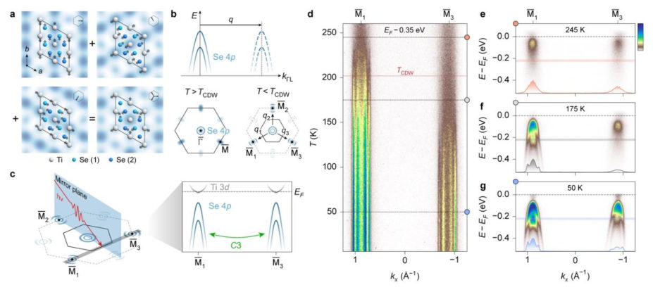
<figcaption class="paper-figure-caption"><b>Fig 1.</b> Fig. 1│ Overview of the chiral CDW phase in 1T-TiSe2. a, Displacement of ions overlaid</figcaption>
</figure>
<figure class="paper-figure-card">
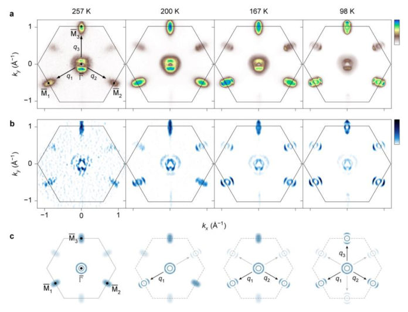
<figcaption class="paper-figure-caption"><b>Fig 2.</b> Fig. 2│Temperature-dependent constant-energy maps. a, Constant-energy maps integrated</figcaption>
</figure>
<figure class="paper-figure-card">
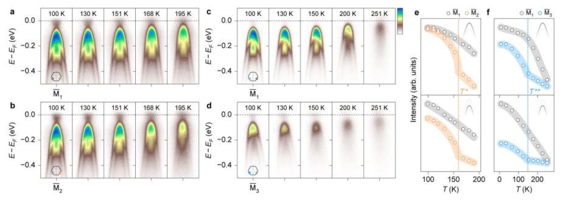
<figcaption class="paper-figure-caption"><b>Fig 3.</b> Fig. 3│ Temperature-dependent energy-momentum cuts. a, Energy-momentum cuts</figcaption>
</figure>
<figure class="paper-figure-card">

<figcaption class="paper-figure-caption"><b>Fig 4.</b> Fig. 4│Phase diagram and simulated angle-resolved photoemission spectra. a, Phase</figcaption>
</figure>
</div>

<p><strong>Summary.</strong> This work re-evaluates the CDW state in 1T-TiSe$_2$, showing that the previously assumed simultaneous triple-q order is incorrect. Using ARPES and theoretical modeling, the authors demonstrate that the CDW order develops sequentially through distinct single-q phases. This sequence is explained by repulsive interactions between the constituent CDW components, providing a refined understanding of symmetry breaking in correlated materials.</p>
<p><strong>Why it may be interesting.</strong> The concept of emergent, temperature-dependent order arising from competing interactions (repulsive coupling) is highly relevant to understanding complex many-body ground states in correlated materials, which shares conceptual links with phase transitions in quantum many-body systems.</p>
<details>
<summary>Detailed structure</summary>
<p><strong>Main problem.</strong> The paper challenges the long-standing paradigm of a simultaneous $2 	imes 2$ triple-$q$ charge-density wave (CDW) order in 1T-TiSe$_2$, demonstrating that the three symmetry-related subcomponents are non-identical and develop sequentially.</p>
<p><strong>Main result.</strong> The CDW order emerges in a temperature-dependent sequence: a single-$q$ component stabilizes first, followed by the other two components at lower temperatures, driven by repulsive coupling between the subcomponents.</p>
<p><strong>Method.</strong> The study combines Angle-Resolved Photoemission Spectroscopy (ARPES) measurements with first-principles DFT calculations and Landau-Ginzburg free-energy analysis.</p>
<p><strong>Model / system.</strong> The physical system is the layered transition-metal dichalcogenide 1T-TiSe$_2$. The theoretical framework involves modeling the CDW order parameter using a Landau-Ginzburg free energy functional that accounts for coupling between three distinct wave vectors.</p>
<p><strong>Key observables.</strong> Folded-band features observed via ARPES at specific M points ($    ext{M}_1,   ext{M}_2,   ext{M}_3$), spectral weight evolution, and the temperature dependence of the CDW order parameters.</p>
<p><strong>Important parameters / regimes.</strong> The nature of the coupling (repulsive vs. attractive) dictates the phase sequence; the transition temperatures ($T_{	ext{CDW}}, T^*$) are key diagnostic points.</p>
<p><strong>Assumptions / limitations.</strong> The analysis relies on the Landau-Ginzburg free energy form and incorporates phonon anharmonicity into the first-principles calculations.</p>
<p><strong>Figures summary.</strong> Figures illustrate the sequential appearance of folded bands at different M points across varying temperatures, and phase diagrams comparing predictions based on attractive versus repulsive CDW interactions.</p>
<p><strong>Paper structure.</strong> The paper progresses by first presenting ARPES evidence for sequential transitions, then using free-energy analysis to model this sequence based on repulsive coupling, and finally supporting this mechanism with detailed first-principles calculations incorporating anharmonic phonons.</p>
</details>
<details>
<summary>Abstract</summary>
<p>Over the past decade, studies revisiting the classical charge-density-wave system 1T-TiSe$_2$, long understood to host the $2 \times 2$ triple-$q$ order with equivalent subcomponents, have suggested that these subcomponents may not be identical, challenging a 50-year-old paradigm. Here, we demonstrate not only that these subcomponents are non-identical but also that they develop sequentially rather than simultaneously. By tracking folded-band features, angle-resolved photoemission spectroscopy reveals that a unidirectional $2 \times 1$ single-$q$ order stabilizes first, while the other two components emerge sequentially at lower temperatures, completing the triple-$q$ phase. Our free-energy analysis explains this hierarchy through repulsive coupling among the three subcomponents, as supported by first-principles calculations incorporating phonon anharmonicity. Consequently, the three subcomponents are inequivalent in both phase and amplitude. These results reconcile reported symmetry breaking and differing characteristic temperatures and establish a framework in which ostensibly simple, high-symmetry charge-density order emerges from temperature-dependent competition and cooperation among inequivalent subcomponents.</p>
</details>
<p><sub><a href="#top">↑ back to top</a></sub></p>

<p><a id="paper-2610.18814"></a></p>
<h3 id="towards-synergy-between-theory-and-experiments-first-passage-processes-under-resetting-with-stochastic-return-protocols"><a href="http://arxiv.org/abs/2610.18814v1">Towards synergy between theory and experiments: First-passage processes under resetting with stochastic return protocols</a></h3>
<p><strong>Authors:</strong> Ashutosh Dubey, Arnab Pal<br>
<strong>Type:</strong> theory · <strong>Category:</strong> statistical mechanics · <strong>PDF:</strong> <a href="https://arxiv.org/pdf/2610.18814v1">https://arxiv.org/pdf/2610.18814v1</a><br>
<strong>Analysis basis:</strong> full PDF text, analyzed in chunks
<strong>Topic relevance:</strong> <code>Frenkel-Kontorova</code> <strong>1/5</strong> · <code>driven-dissipative phase transition</code> <strong>1/5</strong> · <code>non-equilibrium universality</code> <strong>1/5</strong> · <code>quantum measurements</code> <strong>1/5</strong></p>
<div class="figure-strip-hint">↔ Scroll figures horizontally</div>
<div class="paper-figures-scroll">
<figure class="paper-figure-card">
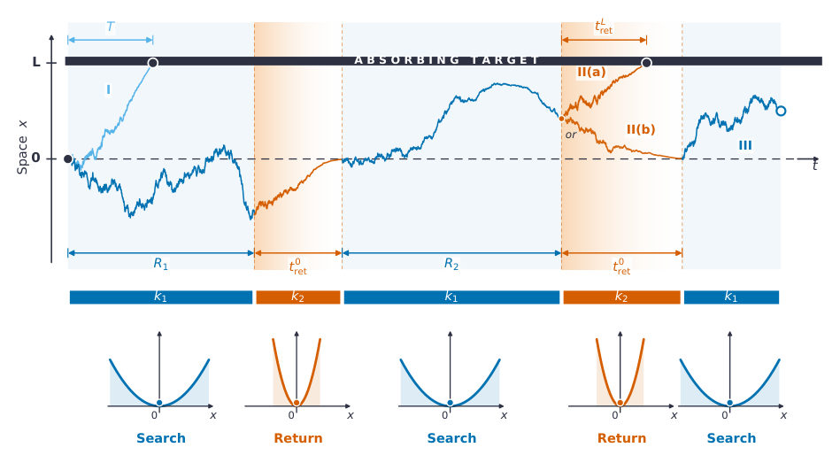
<figcaption class="paper-figure-caption"><b>Fig 1.</b> FIG. 1. Schematic illustration of a search process with stochastic resetting with SR facilitated</figcaption>
</figure>
<figure class="paper-figure-card">

<figcaption class="paper-figure-caption"><b>Fig 2.</b> FIG. 2. The center figure (a) Phase-space diagram in the (k1, k2) plane showing the regions where</figcaption>
</figure>
<figure class="paper-figure-card">

<figcaption class="paper-figure-caption"><b>Fig 3.</b> FIG. 3. The central figure shows the (k1, k2) phase diagram for r = 3, highlighting the regime where</figcaption>
</figure>
<figure class="paper-figure-card">

<figcaption class="paper-figure-caption"><b>Fig 4.</b> FIG. 4. (a) (k1, k2) phase space for fixed r = 1.1 and (b) (r, k2) phase space for fixed k1 = 8.18.</figcaption>
</figure>
<figure class="paper-figure-card">

<figcaption class="paper-figure-caption"><b>Fig 5.</b> FIG. 5. (a) (k1, k2) phase space for fixed r = 1.88 and (b) (r, k2) phase space for fixed k1 = 0.26.</figcaption>
</figure>
</div>

<p><strong>Summary.</strong> This paper analyzes search processes using Stochastic Resetting with Stochastic Return (SR) in a 1D harmonic trap model. By deriving the Mean First-Passage Time and using efficiency criteria, the authors map out the parameter space where SR significantly improves search speed compared to instantaneous return. The findings offer crucial, experimentally verifiable guidelines for optimizing search protocols in physical systems.</p>
<p><strong>Why it may be interesting.</strong> The work provides a detailed theoretical framework for optimizing search processes in physical systems, offering experimentally testable predictions that bridge abstract theoretical models of resetting with concrete dynamics found in optical trap experiments.</p>
<details>
<summary>Detailed structure</summary>
<p><strong>Main problem.</strong> The paper investigates first-passage processes under Stochastic Resetting with Stochastic Return (SR) protocols to determine how this mechanism controls search efficiency compared to standard Instantaneous Return (IR) models.</p>
<p><strong>Main result.</strong> The most beneficial regime for SR is found to occur when the potential strength in the search phase ($k_1$) is large and the potential strength in the return phase ($k_2$) is small.</p>
<p><strong>Method.</strong> The authors analytically derive the Mean First-Passage Time (MFPT) and utilize the coefficient-of-variation (CV) criterion and a stochastic return criterion to construct phase diagrams comparing SR and IR performance.</p>
<p><strong>Model / system.</strong> The model considers a one-dimensional diffusing particle undergoing an overdamped Langevin process confined in a harmonic trap. The process involves a search phase (stiffness $k_1$) followed by a stochastic return phase (stiffness $k_2$) after resetting at rate $r$.</p>
<p><strong>Key observables.</strong> Mean First-Passage Time (MFPT), search efficiency enhancement/suppression (via CV criterion), and the comparison of SR vs. IR performance.</p>
<p><strong>Important parameters / regimes.</strong> Trap stiffnesses ($k_1, k_2$), resetting rate ($r$), and target location ($L$).</p>
<p><strong>Assumptions / limitations.</strong> The dynamics are modeled using an Ornstein–Uhlenbeck (OU) process in both phases, and the analysis explicitly accounts for target detection during the finite-time return phase.</p>
<p><strong>Figures summary.</strong> Figures schematically illustrate the search process under different scenarios (direct success, target hit during return, or return to origin) and present phase diagrams mapping SR benefit based on parameters.</p>
<p><strong>Paper structure.</strong> The paper builds from the general framework of SR protocols, derives the MFPT analytically, and then applies diagnostic criteria (CV, SR criterion) to map out the parameter space where the stochastic return mechanism provides a measurable advantage over instantaneous return.</p>
</details>
<details>
<summary>Abstract</summary>
<p>Stochastic resetting with stochastic return (SR) has recently emerged as an effective and practically relevant strategy for controlling first-passage phenomena and optimizing search processes by significantly reducing completion times in a wide class of stochastic systems. While most theoretical studies assume instantaneous return (IR), in realistic systems the return to the resetting position typically occurs over a finite time. We consider a 1-d diffusing particle in a harmonic trap with stiffnesses $k_1$ and $k_2$ during search and return, respectively. The particle searches for the target and, upon resetting at rate $r$, enters the return phase, continuing until it reaches either the origin or the absorbing target at $L>0$. Notably, the model permits target detection throughout the return phase, distinguishing it from IR scenarios. We analytically derive the MFPT for our model and determine parameter regions where SR enhances or suppresses search efficiency over the underlying dynamics, constructing the corresponding phase diagram using the coefficient of variation criterion. We further identify regimes in which SR is more efficient than IR using the SR criterion. This behavior is tested across different parameter sets taken from experimental studies by Goerlich et al., Biroli et al., and Besga et al. We map the parameter values reported in existing experimental studies onto our theoretical phase diagram, thereby identifying the regimes in which SR outperforms IR. In particular, we find that the most relevant region of the phase space, where SR is most beneficial corresponds to larger values of the potential strength in the search phase and lower values of potential in the return phase. Our results provide experimentally testable predictions and bridge the gap between theoretical resetting models and optical trap mediated finite-time return dynamics.</p>
</details>
<p><sub><a href="#top">↑ back to top</a></sub></p>

<p><a id="paper-2610.18288"></a></p>
<h3 id="role-of-dissipation-dilution-in-achieving-high-mechanical-quality-factors-in-van-der-waals-resonators"><a href="http://arxiv.org/abs/2610.18288v1">Role of dissipation dilution in achieving high mechanical quality factors in van der Waals resonators</a></h3>
<p><strong>Authors:</strong> Lukas Schleicher, Leonard Geilen, Alexander Musta, Niklas Walter, Anne Rodriguez, Philipp Bredol, Alexander W. Holleitner, Eva M. Weig<br>
<strong>Type:</strong> both · <strong>Category:</strong> other · <strong>PDF:</strong> <a href="https://arxiv.org/pdf/2610.18288v1">https://arxiv.org/pdf/2610.18288v1</a><br>
<strong>Analysis basis:</strong> full PDF text, analyzed in chunks
<strong>Topic relevance:</strong> <code>correlated / nonlocal dissipation</code> <strong>1/5</strong> · <code>driven-dissipative phase transition</code> <strong>1/5</strong> · <code>methods for driven-dissipative</code> <strong>1/5</strong></p>
<div class="figure-strip-hint">↔ Scroll figures horizontally</div>
<div class="paper-figures-scroll">
<figure class="paper-figure-card">
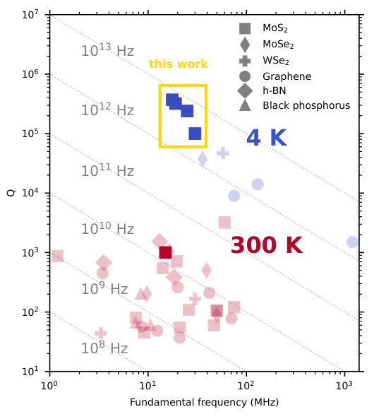
<figcaption class="paper-figure-caption"><b>Fig 1.</b> Figure 1: Overview of van der Waals mechanical res- onators in the literature. Quality factor vs. fundamental eigenfrequency for mechanical resonators made of different van der Waals materials, detailed in the legend. Data points measured at room temperature (4 K) are indicated in red (blue). Data points obtained in this work are highlighted in yellow. Gray lines indicating the Q · f product serve as a guide to the eye. See Supplementary Fig. S1 for details of all references.</figcaption>
</figure>
<figure class="paper-figure-card">
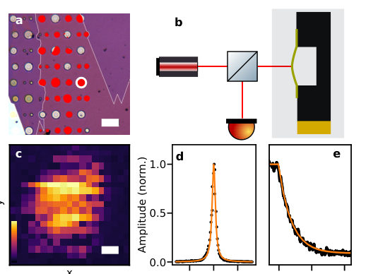
<figcaption class="paper-figure-caption"><b>Fig 2.</b> Figure 2: Experimental setup. (a) Optical microscope im- age of Si/SiO2 substrate coated with Ti/Au and transferred MoS2, overlayed with a photoluminescence map indicating the position of suspended, luminescent monolayers (red). Scale- bar corresponds to 25 µm. (b) Interferometric measurement scheme. The suspended drum is driven with a piezo actuator (yellow box) and exposed to a focused infrared laser spot. The drum’s vibration modulates the reflected light, which is de- tected by a photodetector. (c)-(e) Fundamental mechanical mode of a monolayer drum with a radius of 5.5 µm (marked by a white circle in (a)) at 4 K. (c) Mode shape, depicting the maximum amplitude as a function of...</figcaption>
</figure>
<figure class="paper-figure-card">
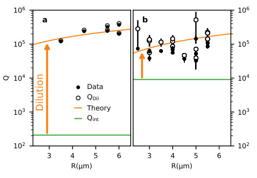
<figcaption class="paper-figure-caption"><b>Fig 3.</b> Figure 3: Dissipation dilution and drum geometry. Quality factors obtained from ringdown measurements at 4 K in (a) monolayer (0.65 nm, black dots) and (b) multilayer drums (37 layers, 24 nm, black dots) for different drum radii. Each data point is averaged over multiple ringdowns acquired on the same drum. The error bars of the monolayer drums are smaller than the symbol size. The diluted intrinsic Qdil = D·Qint (open circle ) are obtained by subtracting the extrinsic contribution of clamping loss, and error bars of propagated error are shown. Fits of the dissipation dilution model are shown as orange lines. The fits yield an intrinsic quality factor of Qint = 212 for the monolayer and...</figcaption>
</figure>
<figure class="paper-figure-card">
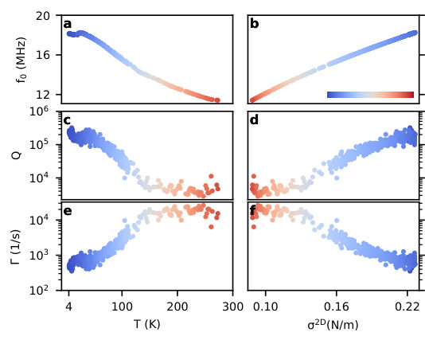
<figcaption class="paper-figure-caption"><b>Fig 4.</b> Figure 4: Temperature dependence of mechanical prop- erties. (a,b) Fundamental eigenfrequency of a monolayer drum with radius of 5.5 µm as a function of temperature and tension, respectively. The tension is obtained from the measured eigenfrequency using Eq. 7. (c,d) Quality factor extracted from the linear response of the drum as a function of temperature and tension, respectively. (e,f) Damping rate as a function of temperature and tension, respectively. The color of the datapoints represents temperature from room temperature (red) down to 4 K (blue).</figcaption>
</figure>
<figure class="paper-figure-card">

<figcaption class="paper-figure-caption"><b>Fig 5.</b> Figure 5: Influence of temperature on dissipation dilution and on damping. (a) Quality factor of a monolayer drum with 5.5 µm radius as a function of temperature-induced tension (black dots). The orange solid and green dashed lines depict the contribution of the temperature-dependent dilution factor and damping rate to the quality factor, starting from the room-temperature quality factor as the baseline. The orange arrow visualizes the dilution factor at room temperature. The green solid line shows the intrinsic quality factor. The pink line combines both contributions, yielding excellent agreement with the measured data. Shaded regions indicate error corridors. (b,c) Inverse intrinsic...</figcaption>
</figure>
</div>

<p><strong>Summary.</strong> This paper investigates how mechanical quality factors in van der Waals resonators are enhanced by a mechanism called dissipation dilution. Using MoS2 drums, the authors report record-high Q factors by modeling the energy dissipation in circular membranes. The findings establish that dissipation dilution is the key factor enabling ultra-high-Q resonators, paving the way for quantum transduction applications.</p>
<p><strong>Why it may be interesting.</strong> The work connects macroscopic mechanical properties (high Q) to fundamental material physics (vdW bonding, surface losses) and provides a quantitative framework (dissipation dilution) applicable to nanoscale quantum devices.</p>
<details>
<summary>Detailed structure</summary>
<p><strong>Main problem.</strong> To establish and quantify the role of "dissipation dilution" in achieving record-high mechanical quality factors (Q) in atomically thin van der Waals (vdW) resonators.</p>
<p><strong>Main result.</strong> The study reports record Q factors up to 372,000 in monolayer MoS2 drums, demonstrating that dissipation dilution is the governing mechanism for high-Q mechanical response in these ultra-thin materials.</p>
<p><strong>Method.</strong> The authors combine rigorous theoretical modeling of energy dissipation in circular drums with experimental measurements using optical interferometry in a cryostat.</p>
<p><strong>Model / system.</strong> The system is a suspended circular drum made of vdW materials like MoS2, analyzed using an elastic energy balance model that decomposes Q into intrinsic and dilution components. The model is adapted for the axisymmetric mode shapes of the drum geometry.</p>
<p><strong>Key observables.</strong> Quality factor (Q), Dilution Factor (D), Intrinsic Quality Factor (Q_int), and fundamental eigenfrequency (f_0).</p>
<p><strong>Important parameters / regimes.</strong> Temperature (4 K), material thickness (monolayer vs. multilayer), and the ratio of stored elastic energy contributions.</p>
<p><strong>Assumptions / limitations.</strong> The intrinsic quality factor of monolayers is limited by surface losses at atomic thickness, and the model assumes the applicability of the energy balance approach for the circular geometry.</p>
<p><strong>Figures summary.</strong> Figure 2 shows the experimental setup and a measurement yielding Q ~ 229,000 for a monolayer drum. Figure 3 compares Q vs. radius for monolayer and multilayer drums, illustrating the interplay between D and Q_int.</p>
<p><strong>Paper structure.</strong> The paper develops a theoretical model for dissipation dilution in circular drums, presents experimental measurements on MoS2 drums at cryogenic temperatures, and analyzes the trade-off between high dilution factors (monolayer) and high intrinsic quality factors (multilayer).</p>
</details>
<details>
<summary>Abstract</summary>
<p>Dissipation dilution has driven a revolution in the quality factors ($Q$) of top-down nanomechanical resonators. Yet it has not been leveraged for van der Waals (vdW) materials. Here we report quality factors up to $372{,}000\pm37{,}000$ in monolayer MoS$_2$ drums at 4 K, nearly an order of magnitude beyond the previous best for any vdW material at this temperature, enabled by a clean, polymer-free exfoliation technique. We develop a dissipation-dilution model for circular drums and analyze the contributing intrinsic and extrinsic dissipation mechanisms. The MoS$_2$ monolayer exhibits a dilution factor of order $1,000$, establishing sub-nanometer-thin resonators as ultimate dilution materials. The intrinsic quality factor, however, is limited by surface losses at atomic thickness. Conversely, multilayer drums show a lower dilution factor but a high intrinsic quality factor, on par with established top-down materials of similar dimensions, both resulting from the increased thickness. A two-level-system analysis of the temperature-dependent damping confirms this bulk-versus-surface picture and provides first insight into its microscopic origin. Our results identify dissipation dilution as the governing mechanism for high-$Q$ mechanical vdW resonators. Combined with strategies such as soft clamping or stress engineering, they establish atomically thin resonators as a platform for ultrahigh-$Q$ quantum transduction and sensing.</p>
</details>
<p><sub><a href="#top">↑ back to top</a></sub></p>

<p><a id="paper-2610.18182"></a></p>
<h3 id="large-deviations-gradient-flows-and-fluctuating-hydrodynamics-for-fractional-diffusion"><a href="http://arxiv.org/abs/2610.18182v1">Large deviations, gradient flows and fluctuating hydrodynamics for fractional diffusion</a></h3>
<p><strong>Authors:</strong> Julien Barre, Hiroshi Horii<br>
<strong>Type:</strong> theory · <strong>Category:</strong> statistical mechanics · <strong>PDF:</strong> <a href="https://arxiv.org/pdf/2610.18182v1">https://arxiv.org/pdf/2610.18182v1</a><br>
<strong>Analysis basis:</strong> full PDF text, analyzed in chunks
<strong>Topic relevance:</strong> <code>Keldysh / 2PI / non-Gaussian methods</code> <strong>1/5</strong> · <code>non-equilibrium universality</code> <strong>1/5</strong></p>
<div class="figure-strip-hint">↔ Scroll figures horizontally</div>
<div class="paper-figures-scroll">
<figure class="paper-figure-card">
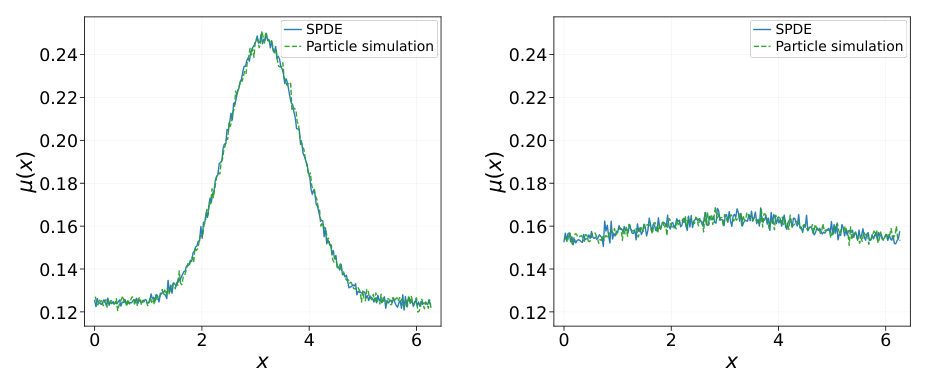
<figcaption class="paper-figure-caption"><b>Fig 1.</b> Figure 1: Representative density profiles for the fractional SPDE with additive noise and the particle simulation, for α = 1.0, dt = 0.01, N = 2 × 106, and a spatial grid with 257 points. Panel (a) shows the profile at the first time step t = 0.01, and panel (b) at t = 5.0. The blue solid line denotes the SPDE with additive noise, and the green dashed line denotes the particle simulation. These plots are the basic time evolution of the profile. A histogram with 257 bins represents the particle density.</figcaption>
</figure>
<figure class="paper-figure-card">

<figcaption class="paper-figure-caption"><b>Fig 2.</b> Figure 2: Time series of the variance C2(t) for φ = sin x (a), φ = sin 2x (b), and φ = sin 4x (c). The horizontal axis shows the physical time t obtained from time steps with dt = 0.01. Markers, with error bars, indicate the models: stars (blue) denote the SPDE with additive noise, triangles (orange) denote the SPDE with multiplicative noise, and circles (green) denote the particle simulation with N = 2 × 106, parameter α = 1.0, and K(1) = 1/2. Symbols are almost superposed and error bars are barely visible.</figcaption>
</figure>
<figure class="paper-figure-card">

<figcaption class="paper-figure-caption"><b>Fig 3.</b> Figure 3: Distributional comparison for the representative test function φ = sin 2x at the final time step. The plotted quantity is the centered random variable ⟨µ, sin 2x⟩−E[⟨µ, sin 2x⟩]. Panel (a) shows the histogram of ⟨µ, sin 2x⟩, and panel (b) shows the QQ plot. Blue denotes the SPDE with additive noise, orange denotes the SPDE with multiplicative noise, and green denotes the particle simulation with N = 2 × 106, parameter α = 1.0, and K(1) = 1/2.</figcaption>
</figure>
<figure class="paper-figure-card">
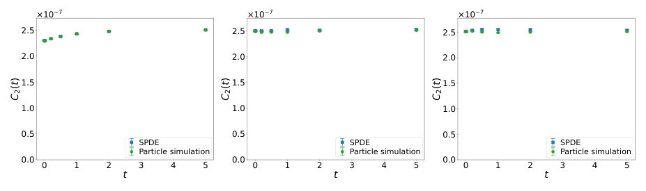
<figcaption class="paper-figure-caption"><b>Fig 4.</b> Figure 4: Time series of the variance C2(t) for φ = sin x (a), φ = sin 2x (b), and φ = sin 4x (c) with random initial state. The horizontal axis shows the physical time t obtained from time steps with dt = 0.01. Markers, with error bars, indicate the simulations: stars (blue) denote the SPDE with additive noise, and circles (green) denote the particle simulation with N = 2 × 106, parameter α = 1.0, and K(1) = 1/2. Symbols are almost superposed and error bars are barely visible.</figcaption>
</figure>
<figure class="paper-figure-card">
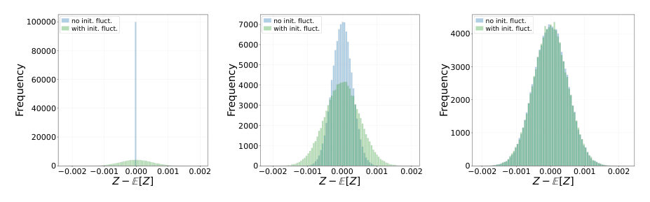
<figcaption class="paper-figure-caption"><b>Fig 5.</b> Figure 5: Histogram comparison for SPDE model with and without initial fluctuation for the representative test function φ = sin 2x. The plotted quantity is the centered random variable Z −E[Z], with Z = ⟨µ, sin 2x⟩. Panels (a), (b), and (c) correspond to t = 0, t = 0.2, and t = 5.0, respectively. In each panel, blue denotes the case without initial fluctuation and green denotes the case with initial fluctuation.</figcaption>
</figure>
</div>

<p><strong>Summary.</strong> This paper tackles the complex problem of fluctuations in systems exhibiting fractional diffusion, which models anomalous transport. It rigorously derives the Large Deviation Principle for the empirical measure, establishing a generalized gradient flow structure. The key outcome is the formulation of a linear Stochastic PDE that describes the system's fluctuations, providing a powerful tool for analyzing non-equilibrium statistical mechanics beyond standard Brownian motion.</p>
<p><strong>Why it may be interesting.</strong> The connection between fractional diffusion, LDPs, and fluctuating hydrodynamics provides a powerful, non-Markovian framework for analyzing non-equilibrium statistical mechanics, which is relevant for understanding complex dynamics in many-body systems.</p>
<details>
<summary>Detailed structure</summary>
<p><strong>Main problem.</strong> The work aims to develop a general theoretical understanding of fluctuations for particle systems whose large-scale dynamics are governed by fractional diffusion.</p>
<p><strong>Main result.</strong> The authors derive the Large Deviation Principle (LDP) for the empirical measure, establishing a generalized gradient flow structure, and subsequently derive the corresponding linear Stochastic PDE (SPDE) describing the fluctuating hydrodynamics.</p>
<p><strong>Method.</strong> The methodology involves formal derivation of LDPs using rate functions and Hamiltonians, followed by deriving and analyzing the associated SPDEs for the fluctuations, often relying on the Central Limit Theorem (CLT) approximation.</p>
<p><strong>Model / system.</strong> The system models $N$ particles undergoing Lévy-type noise, initially independent, and later extended to interact via a mean-field potential. The macroscopic limit is described by fractional diffusion governed by the fractional Laplacian.</p>
<p><strong>Key observables.</strong> The rate function $I[\mu]$ for the LDP, the quasi-potential $U[\mu]$, and the fluctuation field $\eta$ governed by the SPDE.</p>
<p><strong>Important parameters / regimes.</strong> The fractional order $\alpha$ (governing the Lévy noise), the system size $N$ (related to the speed of the LDP), and the interaction strength.</p>
<p><strong>Assumptions / limitations.</strong> The derivation of the mean-field Hamiltonian is noted as formal, and the final SPDE for fluctuations is derived at the Central Limit Theorem (CLT) level, implying a quadratic expansion.</p>
<p><strong>Paper structure.</strong> The paper progresses from establishing the LDP for independent particles to extending this framework to mean-field interacting systems. It derives the associated Hamiltonian, identifies the generalized gradient flow structure, and finally derives and analyzes the resulting linear SPDE for the fluctuations.</p>
</details>
<details>
<summary>Abstract</summary>
<p>This work is a step towards a general understanding of fluctuations for systems of particles described at large scale by fractional diffusion. First, we derive formally a Large Deviation Principle for the empirical measure of mean-field interacting particles with a L{é}vy-type noise. In the case of independent particles, this unveils a generalized gradient flow structure at large scales. Second, we derive and solve numerically a stochastic Partial Differential Equation describing the fluctuating hydrodynamics of this system. The results compare well with direct numerical integration of the particles' dynamics.</p>
</details>
<p><sub><a href="#top">↑ back to top</a></sub></p>

<p><a id="paper-2610.18411"></a></p>
<h3 id="curie-weiss-cell-fluid-model-fitting-to-experimental-critical-point-data"><a href="http://arxiv.org/abs/2610.18411v1">Curie-Weiss cell fluid model: Fitting to experimental critical-point data</a></h3>
<p><strong>Authors:</strong> I. V. Pylyuk, O. A. Dobush, M. P. Kozlovskii, R. V. Romanik, M. A. Shpot<br>
<strong>Type:</strong> theory · <strong>Category:</strong> statistical mechanics · <strong>PDF:</strong> <a href="https://arxiv.org/pdf/2610.18411v1">https://arxiv.org/pdf/2610.18411v1</a><br>
<strong>Analysis basis:</strong> full PDF text, analyzed in chunks
<strong>Topic relevance:</strong> <code>analog quantum simulation</code> <strong>1/5</strong></p>
<div class="figure-strip-hint">↔ Scroll figures horizontally</div>
<div class="paper-figures-scroll">
<figure class="paper-figure-card">
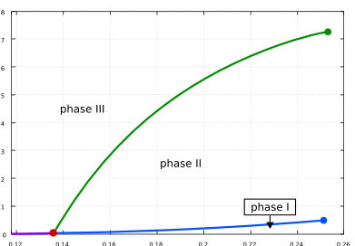
<figcaption class="paper-figure-caption"><b>Fig 1.</b> Fig. 1: Phase diagram of the cell fluid model with temperature-dependent attraction. The first-order phase-transition lines separating phases I, II, and III are shown in blue (I–II coexistence), green (II– III coexistence), and violet (I–III coexistence). In the high-temperature region, the blue and green curves terminate at critical points, indicated by circles. The red circle denotes the triple point</figcaption>
</figure>
</div>

<p><strong>Summary.</strong> This work applies the Curie-Weiss cell fluid model to analyze the critical and triple point behavior of various real fluids, including water and polyol esters. By fitting microscopic parameters to experimental critical data, the authors demonstrate the model's quantitative success, particularly for soft-matter systems, and show how it can be extended to describe complex phase transitions.</p>
<p><strong>Why it may be interesting.</strong> While focused on classical fluid thermodynamics, the methodology of mapping complex many-body interactions onto a simplified, parameterized model framework is relevant for understanding effective Hamiltonians in quantum many-body systems.</p>
<details>
<summary>Detailed structure</summary>
<p><strong>Main problem.</strong> The paper aims to establish a quantitative link between the microscopic parameters of the Curie-Weiss cell fluid model and the macroscopic critical and triple point data of real fluids.</p>
<p><strong>Main result.</strong> The model shows the best quantitative agreement with polyol ester lubricants, suggesting its suitability for soft-matter systems, and can be generalized to describe the triple point by introducing temperature-dependent attraction.</p>
<p><strong>Method.</strong> The authors determine microscopic parameters by matching the model's predictions for critical temperature and density to experimental values, and then analyze deviations in critical pressure and compressibility factor.</p>
<p><strong>Model / system.</strong> The core model is the Curie-Weiss cell fluid model, characterized by interaction constants ($J_1$ for attraction, $J_2$ for repulsion) and cell volume ($v$). It is tested against critical-point data for water, $ ext{CO}_2$, and polyol ester lubricants.</p>
<p><strong>Key observables.</strong> Critical temperature ($T_c$), critical density ($
ho_c$), critical pressure ($P_c$), and the critical compressibility factor ($Z_c$).</p>
<p><strong>Important parameters / regimes.</strong> The ratio of local repulsion to global attraction ($f=J_2/J_1$), and temperature-dependent attraction parameters ($\alpha_I, \alpha_{II}, \alpha_{III}$) for triple point analysis.</p>
<p><strong>Assumptions / limitations.</strong> The analysis relies on matching the model to critical coordinates, and the basic model is noted to deviate from experiment, especially for water, due to neglecting specific interactions.</p>
<p><strong>Figures summary.</strong> The notes mention figures illustrating the phase diagram with coexistence lines and the critical/triple points, and tables comparing calculated vs. experimental critical parameters.</p>
<p><strong>Paper structure.</strong> The paper proceeds by first fixing model parameters using $T_c$ and $
ho_c$, analyzing the resulting $P_c$ and $Z_c$ deviations, and finally generalizing the model by introducing temperature-dependent attraction to describe the triple point behavior.</p>
</details>
<details>
<summary>Abstract</summary>
<p>We examine how the Curie--Weiss cell fluid model can be quantitatively related to real fluids by determining its microscopic parameters from experimental critical-point data for water, carbon dioxide, and three polyol ester lubricants (POE5, POE7, and POE9). The microscopic parameters of the model are determined from the experimental values of the critical temperature and critical density: the global attraction coupling constant is fixed by the critical temperature, and the cell volume by the critical density. The critical pressure then follows as an independent model prediction, deviating from experimental values by 10--41$\%$ across the studied substances. Varying the ratio of local repulsion to global attraction $f=J_2/J_1$ over a wide range has only a weak effect on this deviation. For $f\geq1$, the model's critical compressibility factor lays within a narrow range $Z_c\approx0.382-0.386$, remaining close to the mean-field van der Waals value $Z_c=3/8=0.375$ and consistently overestimating experimental values. The best agreement with experiment is obtained for the polyol ester lubricants and improves along the POE5--POE7--POE9 series with increasing molar mass, suggesting that multiple-occupancy cell fluid models are well suited to systems of large molecules, particularly soft-matter systems with bounded interaction potentials. We further show that generalizing the model by introducing a temperature- and phase-dependent effective attraction allows it to describe a triple point and to reproduce the broad range of critical-to-triple temperature ratios $T_c/T_{\mathrm{tr}}$ characteristic of real fluids.</p>
</details>
<p><sub><a href="#top">↑ back to top</a></sub></p>

<p><a id="paper-2610.18731"></a></p>
<h3 id="finite-energy-two-way-assisted-capacities-exact-formulas-for-multimode-loss-and-fading"><a href="http://arxiv.org/abs/2610.18731v1">Finite-energy two-way assisted capacities: Exact formulas for multimode loss and fading</a></h3>
<p><strong>Authors:</strong> Stefano Pirandola, Gaetana Spedalieri<br>
<strong>Type:</strong> theory · <strong>Category:</strong> quantum information and computing · <strong>PDF:</strong> <a href="https://arxiv.org/pdf/2610.18731v1">https://arxiv.org/pdf/2610.18731v1</a><br>
<strong>Analysis basis:</strong> full PDF text, analyzed in chunks
<strong>Topic relevance:</strong> <code>correlated / nonlocal dissipation</code> <strong>1/5</strong></p>
<div class="figure-strip-hint">↔ Scroll figures horizontally</div>
<div class="paper-figures-scroll">
<figure class="paper-figure-card">
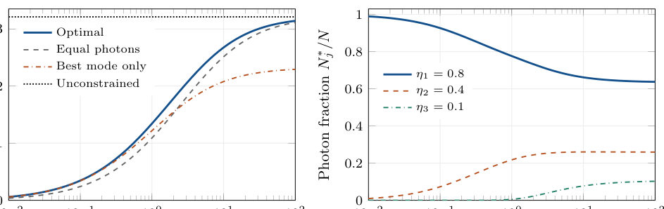
<figcaption class="paper-figure-caption"><b>Fig 1.</b> FIG. 1. Three-mode example with η = (0.8, 0.4, 0.1). (a) The exact capacity from (6) compared with two feasible allocations. The dotted line is Bη = −log2(0.2 · 0.6 · 0.9) ≃3.21090. (b) The solution of (17). All modal means are positive at finite N &gt; 0, although the weakest-mode fraction is very small at low energy. The curves approach the high-energy fractions derived in Appendix D. Each point is obtained by scalar root solving; no Gaussian optimization assumption enters the converse.</figcaption>
</figure>
<figure class="paper-figure-card">

<figcaption class="paper-figure-caption"><b>Fig 2.</b> FIG. 2. Broadband two-way capacities and optimal spectra. (a) The exact coefficient κ(η) in (38); the dotted segment is its small-η asymptote. (b) Optimal occupations at the same total power for four constant transmissivities. The dimensionless frequency is u = ω p</figcaption>
</figure>
<figure class="paper-figure-card">

<figcaption class="paper-figure-caption"><b>Fig 3.</b> Figure 1 compares this optimum with simpler feasible allocations over a range of budgets.</figcaption>
</figure>
<figure class="paper-figure-card">
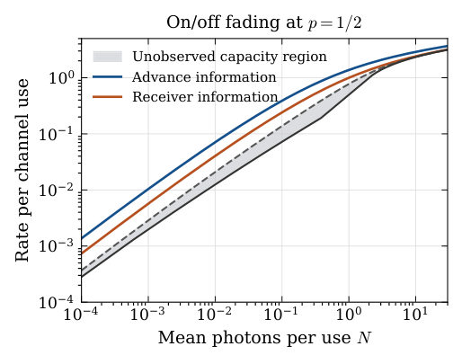
<figcaption class="paper-figure-caption"><b>Fig 4.</b> FIG. 3. Role of fading information for Φp = p id+(1−p)L0 at p = 1/2. The exact advance-information (blue) and receiver- information (orange) capacities are compared with bounds on every unobserved assisted capacity (gray). The dashed edge is a converse; the solid edge is achievable. All rates count every optical channel use, including blocked and vacuum slots.</figcaption>
</figure>
<figure class="paper-figure-card">
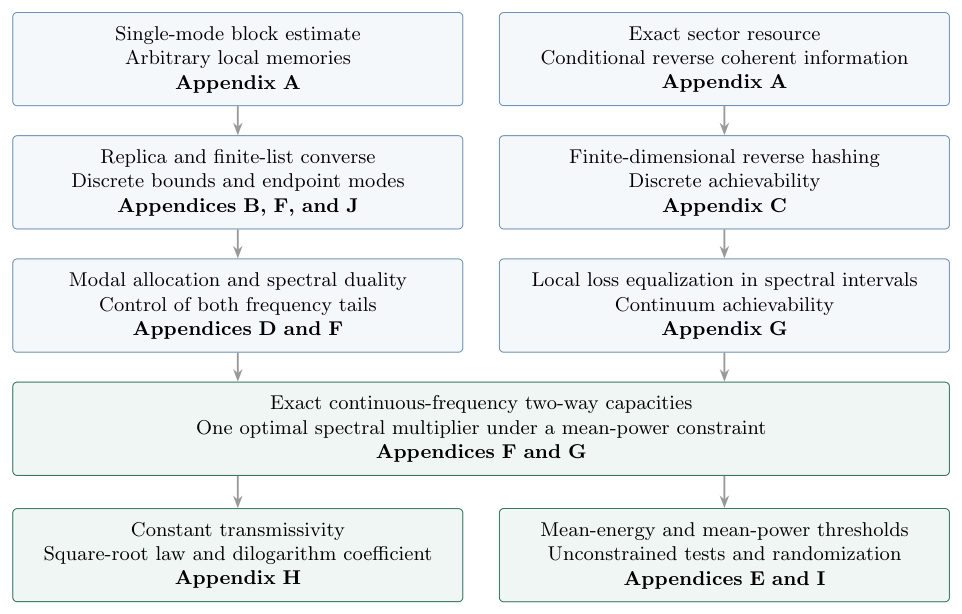
<figcaption class="paper-figure-caption"><b>Fig 5.</b> FIG. 4. Structure of the proof. The single-mode block estimate (lemma 1) yields the adaptive replica and finite-list bounds (lemmas 3 and 5). Scalar duality and spectral tail estimates turn these into the continuum converse. The sector resource (lemma 2) supplies finite-dimensional hashing, first for discrete modes and then for spectral intervals. Together these branches prove theorem 4. Evaluating the flat-profile integral gives theorem 5. The threshold statements also use the unconstrained resource comparison and public vacuum randomization, as detailed in Appendices E and I.</figcaption>
</figure>
</div>

<p><strong>Summary.</strong> This paper provides exact formulas for the two-way quantum and secret-key capacities when transmitting quantum information through multimode channels suffering from bosonic loss and fading. By employing advanced information-theoretic techniques, the authors establish that these capacities are equal under optimal adaptive protocols. The results are vital for guiding energy allocation in energy-constrained optical quantum communication systems.</p>
<p><strong>Why it may be interesting.</strong> This work provides rigorous, exact capacity formulas for realistic, lossy quantum channels, which is crucial for designing practical quantum communication protocols in optical systems.</p>
<details>
<summary>Detailed structure</summary>
<p><strong>Main problem.</strong> The paper determines the exact two-way quantum and secret-key capacities for quantum communication over multimode bosonic loss and fading channels.</p>
<p><strong>Main result.</strong> The two-way capacities ($Q_2, D_2, P_2, K_2$) are found to be equal and are characterized by specific capacity functions $F_\eta(N)$ or $C_{B,\eta}(P)$ under finite-energy or power constraints.</p>
<p><strong>Method.</strong> The authors use optimization techniques, including sector teleportation simulation and applying relative-entropy identities, to establish both upper and lower bounds on the achievable rates.</p>
<p><strong>Model / system.</strong> The system involves quantum communication over multimode bosonic channels subjected to general loss ($\eta_j$) and fading. The analysis extends to continuous frequency-dependent loss under a power constraint.</p>
<p><strong>Key observables.</strong> Two-way quantum capacity ($Q_2$), entanglement distribution capacity ($D_2$), private classical capacity ($P_2$), and secret-key capacity ($K_2$).</p>
<p><strong>Important parameters / regimes.</strong> Mean photon-number constraint ($N$), total input power budget ($P$), and channel transmissivities ($\eta_j$).</p>
<p><strong>Assumptions / limitations.</strong> The analysis distinguishes between the case where channel fading is publicly revealed versus when it remains unobserved, and it compares finite-energy capacities against strong-converse bounds.</p>
<p><strong>Figures summary.</strong> Figures illustrate comparisons between exact capacity calculations and results from different feasible allocations, particularly in multi-mode examples.</p>
<p><strong>Paper structure.</strong> The paper systematically derives capacities for finite-mode systems, extends these results to continuous frequency-dependent loss, and analyzes the specific cases of observed and unobserved fading channels using entropy bounds.</p>
</details>
<details>
<summary>Abstract</summary>
<p>We study quantum communication, entanglement distribution, and secret-key generation through multimode bosonic loss and fading channels, assisted by local quantum operations and two-way classical communication. Using sector teleportation, we determine the exact two-way quantum and secret-key capacities of multimode pure-loss channels under a mean photon-number constraint, allowing arbitrary adaptive quantum protocols. We extend these results to continuous frequency-dependent loss under a power constraint and identify the optimal allocation of photons among optical modes. For constant loss over an unlimited bandwidth, we obtain a closed-form capacity proportional to the square root of power. For randomly varying loss, we determine exact finite-energy capacities when the channel realization is publicly revealed, distinguishing knowledge before and after transmission. When fading remains unobserved, we derive capacity bounds and explicit formulas for an on/off channel. We also establish strong-converse bounds, with exact thresholds for the deterministic loss models considered here, observed fading, and unobserved fading with finitely many possible transmissivities. Under mean energy constraints, these thresholds generally exceed the corresponding finite-energy capacities. These results guide energy allocation and provide benchmarks for energy-constrained optical quantum communication with multimode signals and variable loss.</p>
</details>
<p><sub><a href="#top">↑ back to top</a></sub></p>

<p><a id="paper-2610.17648"></a></p>
<h3 id="nearly-optimal-quantum-sample-complexity-of-learning-fourier-sparse-boolean-functions"><a href="http://arxiv.org/abs/2610.17648v1">Nearly Optimal Quantum Sample Complexity of Learning Fourier-Sparse Boolean Functions</a></h3>
<p><strong>Authors:</strong> Zekun Ye<br>
<strong>Type:</strong> theory · <strong>Category:</strong> quantum information and computing · <strong>PDF:</strong> <a href="https://arxiv.org/pdf/2610.17648v1">https://arxiv.org/pdf/2610.17648v1</a><br>
<strong>Analysis basis:</strong> full PDF text, analyzed in chunks
<strong>Topic relevance:</strong> <code>quantum measurements</code> <strong>1/5</strong></p>
<div class="figure-strip-hint">↔ Scroll figures horizontally</div>
<div class="paper-figures-scroll">
<figure class="paper-figure-card">
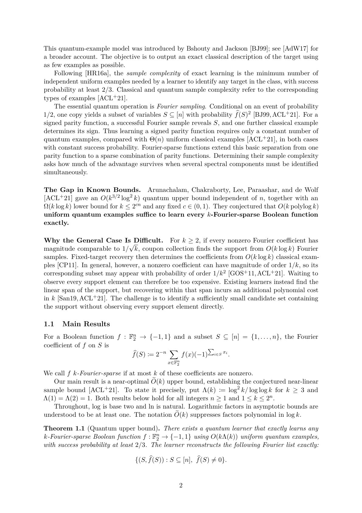
<figcaption class="paper-figure-caption"><b>Fig 1.</b> Low-resolution page preview, page 2</figcaption>
</figure>
<figure class="paper-figure-card">

<figcaption class="paper-figure-caption"><b>Fig 2.</b> Low-resolution page preview, page 3</figcaption>
</figure>
<figure class="paper-figure-card">
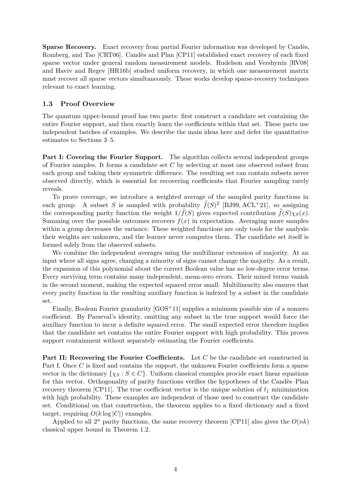
<figcaption class="paper-figure-caption"><b>Fig 3.</b> Low-resolution page preview, page 4</figcaption>
</figure>
<figure class="paper-figure-card">
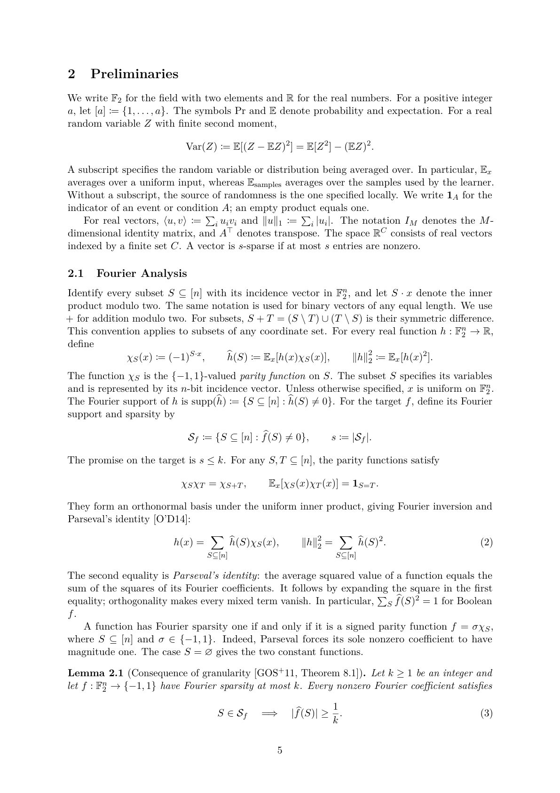
<figcaption class="paper-figure-caption"><b>Fig 4.</b> Low-resolution page preview, page 5</figcaption>
</figure>
<figure class="paper-figure-card">
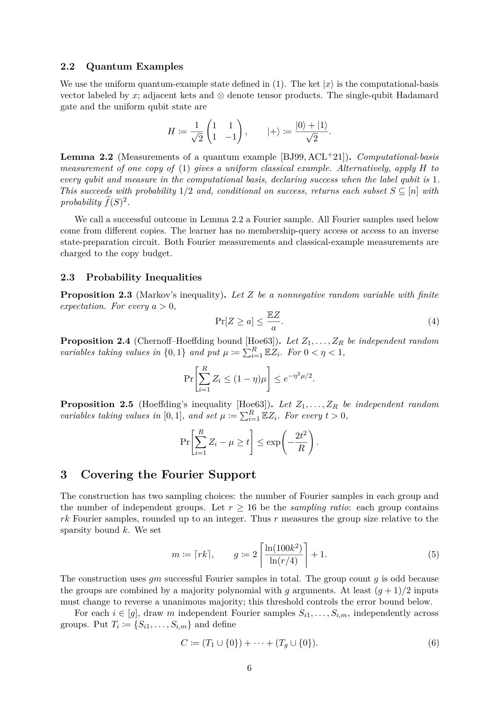
<figcaption class="paper-figure-caption"><b>Fig 5.</b> Low-resolution page preview, page 6</figcaption>
</figure>
</div>

<p><strong>Summary.</strong> This theoretical paper derives a near-optimal quantum sample complexity for learning Boolean functions that are sparse in the Fourier domain. It achieves this by developing a two-stage quantum learning algorithm that first identifies the function's support and then recovers its sparse coefficients. The result provides a significant improvement over prior quantum bounds and establishes a clear quantum advantage over the known classical sample complexity.</p>
<p><strong>Why it may be interesting.</strong> While the core topic is quantum learning theory, the techniques involving quantum state preparation, sampling, and complexity bounds are fundamental to quantum information theory, which underpins many quantum simulation and computation models.</p>
<details>
<summary>Detailed structure</summary>
<p><strong>Main problem.</strong> The paper addresses determining the minimum number of uniform quantum examples required to exactly learn a Boolean function that is sparse in the Fourier basis.</p>
<p><strong>Main result.</strong> The authors establish a near-optimal quantum sample complexity of $\widetilde{O}(k)$ for learning $k$-Fourier-sparse functions, significantly improving previous bounds.</p>
<p><strong>Method.</strong> The approach uses a two-stage process: first, constructing a candidate set containing the function's entire Fourier support using multilinear polynomials, and second, recovering the sparse coefficients using techniques related to $\ell_1$ minimization.</p>
<p><strong>Model / system.</strong> The model involves Boolean functions $f: \{0, 1\}^n 	o \{-1, 1\}$ sampled via quantum states, analyzed using Fourier analysis and quantum sampling techniques.</p>
<p><strong>Key observables.</strong> Sample complexity (number of quantum examples), Fourier support size ($k$), and the resulting coefficient vector.</p>
<p><strong>Important parameters / regimes.</strong> Sparsity $k$, input length $n$, and the required sample size $O(k \Lambda(k))$ quantum copies.</p>
<p><strong>Assumptions / limitations.</strong> The analysis relies on the independence of samples across different groups and the successful construction of a candidate set $C$ containing the true support.</p>
<p><strong>Figures summary.</strong> Not specified in the notes.</p>
<p><strong>Paper structure.</strong> The paper is structured around proving the quantum upper bound via a two-stage algorithm: (1) using multilinear polynomials to guarantee support containment within a candidate set $C$, and (2) applying sparse recovery theorems to find the coefficients, concluding with a comparison to the classical $\Theta(nk)$ bound.</p>
</details>
<details>
<summary>Abstract</summary>
<p>We study the number of uniform quantum examples needed to exactly learn a Boolean function with at most $k$ nonzero Fourier coefficients. We give a learner with near-optimal $\widetilde{O}(k)$ sample complexity independent of the input length $n$. The learner uses only separate measurements of individual examples. This improves the previous $O(k^{3/2}\log^2 k)$ upper bound (Arunachalam, Chakraborty, Lee, Paraashar, and de Wolf, 2021). The main ingredient is a candidate set formed by symmetric differences of subsets from independent groups of Fourier samples. A multilinear majority polynomial combines unbiased random approximations into an accurate witness whose Fourier support lies in this set. Granularity then forces the set to contain the entire Fourier support, including subsets never directly sampled. For comparison, we derive the tight classical sample complexity $Θ(nk)$ by combining known sparse-recovery and lower-bound results.</p>
</details>
<p><sub><a href="#top">↑ back to top</a></sub></p>

<p><a id="paper-2610.17797"></a></p>
<h3 id="proof-of-the-exact-correlation-length-exponent-math632math-and-algebraic-relations-for-math633math-and-math634math-in-the-3d-ising-model"><a href="http://arxiv.org/abs/2610.17797v1">Proof of the exact correlation-length exponent $ν= \frac{\sqrt[3]{2}}{2}$ and algebraic relations for $β$ and $γ$ in the 3D Ising model</a></h3>
<p><strong>Authors:</strong> Aleksandr Liivand<br>
<strong>Type:</strong> theory · <strong>Category:</strong> statistical mechanics · <strong>PDF:</strong> <a href="https://arxiv.org/pdf/2610.17797v1">https://arxiv.org/pdf/2610.17797v1</a><br>
<strong>Analysis basis:</strong> full PDF text, analyzed in chunks
<strong>Topic relevance:</strong> <code>analog quantum simulation</code> <strong>1/5</strong></p>
<div class="figure-strip-hint">↔ Scroll figures horizontally</div>
<div class="paper-figures-scroll">
<figure class="paper-figure-card">

<figcaption class="paper-figure-caption"><b>Fig 1.</b> Low-resolution page preview, page 2</figcaption>
</figure>
<figure class="paper-figure-card">
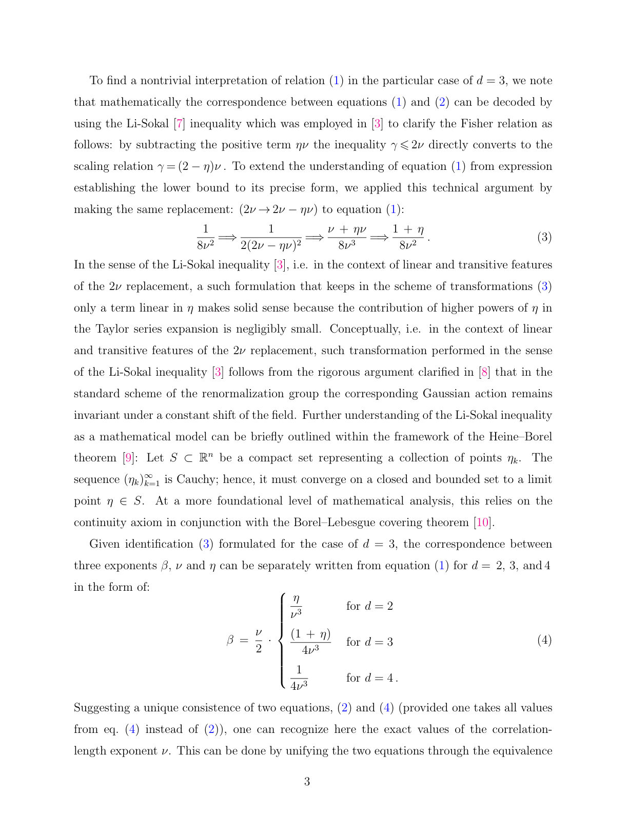
<figcaption class="paper-figure-caption"><b>Fig 2.</b> Low-resolution page preview, page 3</figcaption>
</figure>
<figure class="paper-figure-card">

<figcaption class="paper-figure-caption"><b>Fig 3.</b> Low-resolution page preview, page 4</figcaption>
</figure>
<figure class="paper-figure-card">
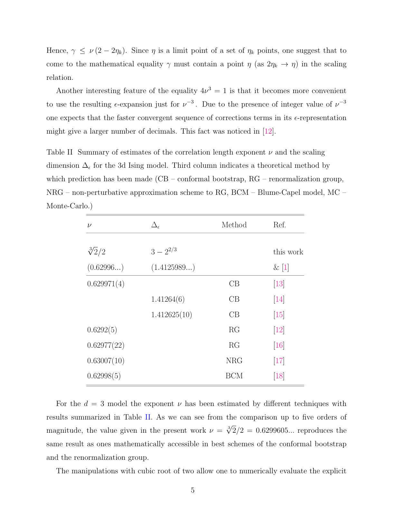
<figcaption class="paper-figure-caption"><b>Fig 4.</b> Low-resolution page preview, page 5</figcaption>
</figure>
<figure class="paper-figure-card">

<figcaption class="paper-figure-caption"><b>Fig 5.</b> Low-resolution page preview, page 6</figcaption>
</figure>
</div>

<p><strong>Summary.</strong> This theoretical paper provides a rigorous proof for the exact value of the correlation-length exponent ($
u$) in the 3D Ising model, finding it to be $rac{\sqrt[3]{2}}{2}$. Using advanced mathematical tools, the authors also derive exact algebraic expressions for the other critical exponents ($eta$ and $\gamma$) based on this fundamental constant.</p>
<p><strong>Why it may be interesting.</strong> While focused on classical statistical mechanics, the rigorous determination of critical exponents provides foundational knowledge about phase transitions, which informs the understanding of critical points in quantum many-body systems.</p>
<details>
<summary>Detailed structure</summary>
<p><strong>Main problem.</strong> The paper aims to determine the exact value of the correlation-length exponent ($
u$) and derive exact algebraic relations for the critical exponents ($eta$ and $\gamma$) in the 3D Ising model.</p>
<p><strong>Main result.</strong> The authors prove the exact value for the correlation-length exponent in the 3D Ising model is $
u = rac{\sqrt[3]{2}}{2}$, and derive $eta$ and $\gamma$ based on this value.</p>
<p><strong>Method.</strong> The derivation employs a combination of group theoretical approaches, constructive geometry, and advanced mathematical techniques, including analyzing functional forms across different dimensions ($d$) and utilizing concepts from Galois theory.</p>
<p><strong>Model / system.</strong> The study focuses on the critical behavior of the 3D Ising model, a canonical model for studying phase transitions in statistical mechanics.</p>
<p><strong>Key observables.</strong> Critical exponents ($
u$, $eta$, $\gamma$, $\eta$), and the anomalous dimension ($\gamma_\epsilon$).</p>
<p><strong>Important parameters / regimes.</strong> The spatial dimension ($d$), particularly $d=3$, is the primary parameter of interest.</p>
<p><strong>Assumptions / limitations.</strong> The derivation relies on interpreting the correspondence between different scaling relations as a mathematical limit and uses advanced algebraic structures (e.g., field extensions) to constrain the exponents.</p>
<p><strong>Figures summary.</strong> Table I shows the equivalence condition ($4
u^3 = 1$) leading to $
u = rac{\sqrt[3]{2}}{2}$ for $d=3$. Table II compares the derived result against high-precision numerical estimates from various methods.</p>
<p><strong>Paper structure.</strong> The paper builds upon previous scaling relation results, derives nonlinear constraints on the exponents, establishes a functional form for $
u$ dependent on dimension $d$, and finally uses advanced algebraic methods to fix the exact value of $
u$ for $d=3$.</p>
</details>
<details>
<summary>Abstract</summary>
<p>Based on our previous results regarding critical exponent estimates for the 3D Ising model and scaling relations [1], we have proven that the exact value of the correlation-length exponent is $\frac{\sqrt[3]{2}}{2}$. This is in very close agreement with the most precise numerical estimates currently available. Using a group theoretical approach and some propositions of constructive geometry, we derived an exact construction of algebraic expressions for the critical exponents $γ$ and $β$. We proved that these expressions depend solely on the exact value of $ν\,$.</p>
</details>
<p><sub><a href="#top">↑ back to top</a></sub></p>

<p><a id="paper-2610.17286"></a></p>
<h3 id="quantum-cryptography-and-autoformalization-in-lean"><a href="http://arxiv.org/abs/2610.17286v1">Quantum Cryptography and Autoformalization in Lean</a></h3>
<p><strong>Authors:</strong> Maor Ben Shahar, Jonathan Morag, Dirk Englund, Kfir Sulimany<br>
<strong>Type:</strong> theory · <strong>Category:</strong> quantum information and computing · <strong>PDF:</strong> <a href="https://arxiv.org/pdf/2610.17286v1">https://arxiv.org/pdf/2610.17286v1</a><br>
<strong>Analysis basis:</strong> full PDF text, analyzed in chunks
<strong>Topic relevance:</strong> <code>quantum measurements</code> <strong>1/5</strong></p>
<div class="figure-strip-hint">↔ Scroll figures horizontally</div>
<div class="paper-figures-scroll">
<figure class="paper-figure-card">

<figcaption class="paper-figure-caption"><b>Fig 1.</b> FIG. 1. The proving workflow and review. Agents develop statements, definitions, and candidate proofs. Kernel checking validates the formal derivation, while manual review checks the intended meaning of the formal objects and guides proof strategy and library organization.</figcaption>
</figure>
<figure class="paper-figure-card">
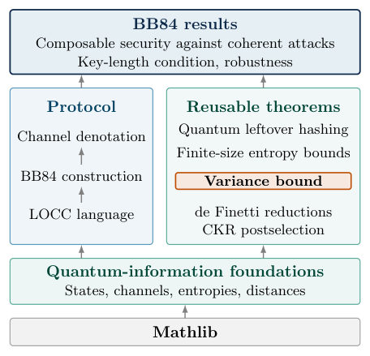
<figcaption class="paper-figure-caption"><b>Fig 2.</b> FIG. 2. The machine-checked BB84 development (read bottom-up). The LOCC protocol construction and reusable quantum-information theorems support the BB84 security, key-length, and robustness results. The highlighted box marks the improved conditional-entropy variance bound of Sec. V.</figcaption>
</figure>
</div>

<p><strong>Summary.</strong> This paper develops a novel, machine-checkable framework in the Lean proof assistant to prove the end-to-end security of QKD protocols like BB84. By formalizing the entire process, including finite-size effects and coherent attacks, it establishes a reproducible standard for security arguments in quantum cryptography. This showcases how AI-assisted formal methods can accelerate fundamental theoretical discoveries in quantum information science.</p>
<p><strong>Why it may be interesting.</strong> This work demonstrates a powerful synergy between theoretical quantum information science and formal verification tools, setting a new standard for provable security in quantum communication protocols.</p>
<details>
<summary>Detailed structure</summary>
<p><strong>Main problem.</strong> The core problem is establishing rigorous, end-to-end, composable security proofs for Quantum Key Distribution (QKD) protocols, addressing gaps caused by mismatched assumptions in existing literature.</p>
<p><strong>Main result.</strong> The authors provide the first end-to-end, machine-verified composable finite-key security proof for the entanglement-based qubit BB84 protocol against coherent attacks.</p>
<p><strong>Method.</strong> The work formalizes the entire security argument within the Lean proof assistant, utilizing an LLM-based autoformalization pipeline and enforcing protocol constraints via a specialized Local Operations and Classical Communication (LOCC) language.</p>
<p><strong>Model / system.</strong> The focus is on the theoretical security analysis of the entanglement-based qubit BB84 protocol, modeled using quantum channels and structured as a sequence of local operations and classical communication steps.</p>
<p><strong>Key observables.</strong> Security bound ($\epsilon_{	ext{QKD}}$), key rate (addressing finite-size penalty), and the probability of protocol abortion ($   ext{p}_{    ext{abort}}$).</p>
<p><strong>Important parameters / regimes.</strong> Finite block size, QBER ($q$), and the parameters governing error-correction schemes (e.g., decoding radius $t$).</p>
<p><strong>Assumptions / limitations.</strong> The security proof relies on the LOCC framework, the assumption of coherent attacks, and the successful application of finite-size entropy bounds.</p>
<p><strong>Figures summary.</strong> Figure 1 illustrates the AI-assisted proving workflow (AI agents $ o$ Lean kernel $    o$ manual review). Figure 2 details the machine-checked BB84 development flow from LOCC construction to security proofs.</p>
<p><strong>Paper structure.</strong> The paper builds a formal framework in Lean to model quantum protocols as structured types, derives the associated quantum channel using the diamond norm, and applies this framework to prove the security of BB84 by comparing the real channel to an ideal, secure channel.</p>
</details>
<details>
<summary>Abstract</summary>
<p>Quantum key distribution provides secure communication by relying on physics principles and mathematical reasoning. Security proofs across the field can contain gaps, often between individually valid theorems integrated under mismatched assumptions. We produce an end-to-end security theorem formalized in the Lean proof assistant, eliminating hidden hypotheses by building only on Lean's standard axioms. Our proof covers composable security of the entanglement-based qubit BB84 protocol against coherent attacks by the postselection technique, accounting for finite block size, and is written in a language that enforces local operations and classical communication to help ensure a faithful representation of the protocol. The proof itself was enabled by LLM-based autoformalization, and with the proof complete, we used the same pipeline as a discovery machine, reducing the finite-size penalty on the key rate. Our work sets a reproducible standard for security arguments in quantum cryptography and shows how formal proof engines can accelerate discovery across quantum information science.</p>
</details>
<p><sub><a href="#top">↑ back to top</a></sub></p>

<p><a id="paper-2610.18785"></a></p>
<h3 id="relative-entropy-geometry-and-convergence-in-nonconvex-wiretap-optimization"><a href="http://arxiv.org/abs/2610.18785v1">Relative-Entropy Geometry and Convergence in Nonconvex Wiretap Optimization</a></h3>
<p><strong>Authors:</strong> Farzin Salek, Masahito Hayashi<br>
<strong>Type:</strong> both · <strong>Category:</strong> quantum information and computing · <strong>PDF:</strong> <a href="https://arxiv.org/pdf/2610.18785v1">https://arxiv.org/pdf/2610.18785v1</a><br>
<strong>Analysis basis:</strong> full PDF text, analyzed in chunks
<strong>Topic relevance:</strong> <code>quantum measurements</code> <strong>1/5</strong></p>
<div class="figure-strip-hint">↔ Scroll figures horizontally</div>
<div class="paper-figures-scroll">
<figure class="paper-figure-card">

<figcaption class="paper-figure-caption"><b>Fig 1.</b> Figure 1: Known-capacity checks. Top: BSC–BSC with Bob crossover p1 = 0.1; the trajectory uses Eve crossover p2 = 0.25. Bottom: BEC–BEC with Bob erasure ϵ1 = 0.2; the trajectory uses Eve erasure ϵ2 = 0.5. The sweep markers agree with the analytic capacities at the displayed precision.</figcaption>
</figure>
<figure class="paper-figure-card">

<figcaption class="paper-figure-caption"><b>Fig 2.</b> Figure 2: BEC–BSC validation with Eve crossover ϵ = 0.1. Left: a selected trajectory for Bob erasure α = 0.45. Right: comparison with the scalar mesh benchmark over 0 ≤α ≤0.45. The more-capable condition makes U = X sufficient throughout this sweep.</figcaption>
</figure>
<figure class="paper-figure-card">
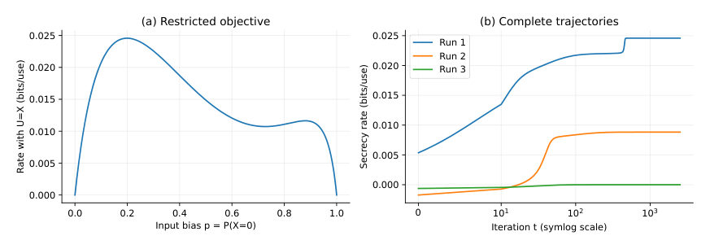
<figcaption class="paper-figure-caption"><b>Fig 3.</b> Figure 3: Channel 1. Left: the nonconcave objective with U = X. Right: three initializations of the joint iteration, continued through the numerical stopping test. The iteration axis is linear close to zero and logarithmic thereafter, so both the early transient and later approach are visible. The lower positive trajectory approaches an off-diagonal law.</figcaption>
</figure>
<figure class="paper-figure-card">

<figcaption class="paper-figure-caption"><b>Fig 4.</b> Figure 4: Mean best-of-R terminal rate, with one-standard-error bars across 20 independent trials of nested random starts. Dashed lines are the finer convex-envelope mesh benchmarks. Mesh values approximate the global optimum from below.</figcaption>
</figure>
<figure class="paper-figure-card">

<figcaption class="paper-figure-caption"><b>Fig 5.</b> Figure 5: Bob BSC(0.1), Eve BEC(0.4). Left: every rate with U = X is nonpositive. Right: the joint iteration finds a positive rate of approximately 0.00645039 bits/use, consistent with the finer convex-envelope mesh benchmark.</figcaption>
</figure>
</div>

<p><strong>Summary.</strong> This paper introduces an entropic descent method to solve the nonconvex optimization problem of maximizing secrecy capacity in quantum wiretap channels. By leveraging relative-entropy identities, it proves convergence guarantees for the optimization process, even for complex noncommuting quantum outputs. The work provides a powerful algorithmic tool for quantifying secure communication rates in quantum settings.</p>
<p><strong>Why it may be interesting.</strong> While focused on information theory, the rigorous mathematical machinery—entropic descent, Kurdyka-Łojasiewicz arguments, and convergence analysis on complex manifolds—is highly relevant to optimizing parameters in quantum control or characterizing steady states in open quantum systems.</p>
<details>
<summary>Detailed structure</summary>
<p><strong>Main problem.</strong> The paper develops and analyzes an entropic descent method to optimize the secrecy capacity of quantum wiretap channels, which involves solving a nonconvex optimization problem.</p>
<p><strong>Main result.</strong> The method establishes quantitative descent and convergence guarantees for the objective function, extending the analysis to noncommuting quantum outputs via monotone alternating updates.</p>
<p><strong>Method.</strong> The core method is an entropic descent algorithm utilizing relative-entropy identities to derive explicit mirror-descent iterations for optimization over probability simplices.</p>
<p><strong>Model / system.</strong> The study focuses on classical and quantum secure communication channels, specifically the wiretap channel defined by main and eavesdropper channels. The optimization variables describe a randomized encoder.</p>
<p><strong>Key observables.</strong> Secrecy capacity ($C_S$), private information rate ($P(1)(W)$), and the objective function $F(p) = I(U; Y) - I(U; Z)$ (or its quantum analogue).</p>
<p><strong>Important parameters / regimes.</strong> The analysis considers arbitrary finite classical channels, strictly positive transition matrices, and the structure of the quantum channel (e.g., BPC(r)/BEC((1-r)^2)).</p>
<p><strong>Assumptions / limitations.</strong> Convergence proofs rely on relative-entropy bounds and the Kurdyka–Łojasiewicz argument; the quantum analysis assumes the existence of a structured update rule derived from the quantum score.</p>
<p><strong>Figures summary.</strong> Figure 7 compares the private information rate for a noncommuting channel against independent convex-envelope benchmarks, showing the structured update recovers the rate obtained by the joint iteration.</p>
<p><strong>Paper structure.</strong> The paper first analyzes the classical case, establishing descent properties using relative entropy. It then extends the framework to quantum channels, deriving quantum score identities and proposing monotone alternating updates for covariant encoders, concluding with numerical validation.</p>
</details>
<details>
<summary>Abstract</summary>
<p>We develop and analyze an entropic descent method for a nonconvex optimization problem on probability simplices arising in classical and quantum secure communication. The optimization variables describe a randomized encoder, allowing its input distribution and stochastic preprocessing to be optimized jointly. An exact relative-entropy identity yields a channel-independent majorization bound and an explicit mirror-descent iteration with a fixed unit step size. We establish quantitative descent, convergence of objective values, and stationarity of accumulation points on their support faces for arbitrary finite classical channels, without assuming degradedness or less noisiness. For strictly positive transition matrices, a square-root parametrization and a Kurdyka--Łojasiewicz argument establish finite length of the transformed trajectory and convergence of the entire sequence, including limits on the simplex boundary. For less-noisy channels, a restricted convex formulation admits global convergence with an explicit \(O(1/t)\) objective-error bound. We extend the relative-entropy construction to noncommuting quantum outputs and derive monotone alternating updates for covariant encoders, including correlated preprocessing over a fixed block. Numerical experiments compare the method with analytic benchmarks and constrained optimization, reveal multiple attracting values, and demonstrate strict improvements from stochastic preprocessing.</p>
</details>
<p><sub><a href="#top">↑ back to top</a></sub></p>

<p><a id="paper-2610.17722"></a></p>
<h3 id="representation-geometry-and-inductive-biases-in-quantum-classifiers-across-classical-visual-benchmarks"><a href="http://arxiv.org/abs/2610.17722v1">Representation Geometry and Inductive Biases in Quantum Classifiers across Classical Visual Benchmarks</a></h3>
<p><strong>Authors:</strong> Yu Yamaoka, Weng Ian Chan, Kosuke Mitarai<br>
<strong>Type:</strong> both · <strong>Category:</strong> disordered systems and neural networks · <strong>PDF:</strong> <a href="https://arxiv.org/pdf/2610.17722v1">https://arxiv.org/pdf/2610.17722v1</a><br>
<strong>Analysis basis:</strong> full PDF text, analyzed in chunks
<strong>Topic relevance:</strong> <code>quantum measurements</code> <strong>1/5</strong></p>
<div class="figure-strip-hint">↔ Scroll figures horizontally</div>
<div class="paper-figures-scroll">
<figure class="paper-figure-card">
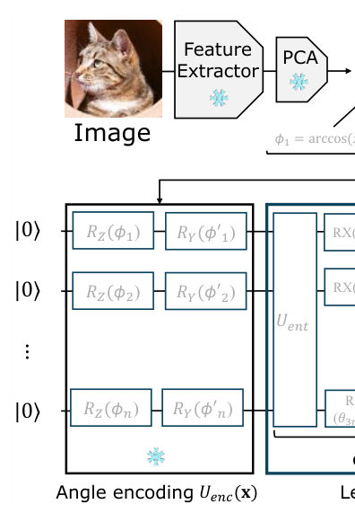
<figcaption class="paper-figure-caption"><b>Fig 1.</b> Fig. 1 Quantum classification pipeline using classical features. Uent is a fixed entangling unitary applied across the qubits. Encoding and learning</figcaption>
</figure>
<figure class="paper-figure-card">
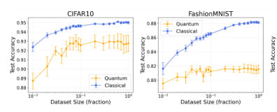
<figcaption class="paper-figure-caption"><b>Fig 2.</b> Fig. 2 Mean test accuracy with 95% confidence interval as error bars across different dataset sizes (higher is better).</figcaption>
</figure>
<figure class="paper-figure-card">

<figcaption class="paper-figure-caption"><b>Fig 3.</b> Fig. 3 Mean generalization with 95% confidence interval as error bars across different dataset sizes (lower is better). Generalization is defined as the difference between training and test accuracies.</figcaption>
</figure>
<figure class="paper-figure-card">
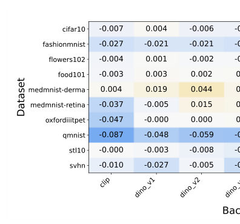
<figcaption class="paper-figure-caption"><b>Fig 4.</b> Fig. 4 Test accuracy on cross-dataset and cross-feature comparison.</figcaption>
</figure>
<figure class="paper-figure-card">
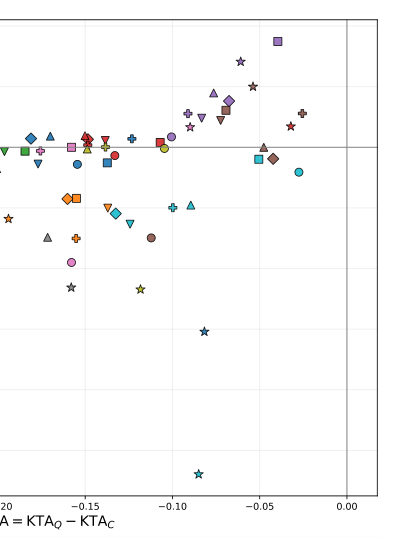
<figcaption class="paper-figure-caption"><b>Fig 5.</b> Fig. 5 Relationship between the change in kernel-target alignment ∆KTA and the test accuracy difference ∆Acc. Each point corresponds to a dataset–backbone pair, with colors indicating datasets and marker shapes indicating backbones. A positive correlation (Pearson r = 0.312, Spearman ρ = 0.429) indicates that performance differences follow changes in representation alignment. test accuracy between quantum and classical classifiers across all datasets and feature extractors. Each point corresponds to a dataset–backbone pair, and the axes represent ∆KTA = KTAQ −KTAV and ∆Acc = AccQ −AccV , respectively. We observe a clear positive correlation between these quantities (Pearson r = 0.312,...</figcaption>
</figure>
</div>

<p><strong>Summary.</strong> This paper investigates if quantum machine learning offers practical advantages over classical methods when classifying real-world images. By focusing only on the quantum classifier, the authors show that quantum performance strongly depends on how well the input features align with the quantum feature space. The results suggest that while quantum models can be powerful, their effectiveness requires careful alignment with classical data structure and is sensitive to training sample aggregation.</p>
<p><strong>Why it may be interesting.</strong> The explicit analysis of how unitary constraints (a core concept in quantum information) impose biases that interact with classical data representations provides a bridge between quantum circuit theory and practical machine learning generalization bounds.</p>
<details>
<summary>Detailed structure</summary>
<p><strong>Main problem.</strong> The core question is whether the theoretical quantum advantages of Quantum Machine Learning (QML) translate into meaningful performance improvements when applied to realistic, classical visual data like natural images.</p>
<p><strong>Main result.</strong> Quantum classifiers benefit significantly from classical features that are geometrically aligned with the quantum feature space, and their performance is sensitive to the aggregation size of training samples.</p>
<p><strong>Method.</strong> The study compares quantum and classical classifiers by fixing the feature extractor (using classical features) and varying the quantum classifier's unitary structure, while also analyzing the impact of weak supervision via label proportions.</p>
<p><strong>Model / system.</strong> The model involves a quantum classification pipeline where classical data is encoded into quantum states via feature mappings, followed by classification using a parameterized quantum circuit built from unitary operations.</p>
<p><strong>Key observables.</strong> Generalization gap (TestAcc - TrainAcc), Kernel Target Alignment (KTA), and test accuracy as a function of bag size ($m$).</p>
<p><strong>Important parameters / regimes.</strong> Data scale, supervision strength, circuit depth, and the bag size ($m$) used for weak supervision.</p>
<p><strong>Assumptions / limitations.</strong> The analysis isolates the classifier's inductive bias by using pre-trained classical feature extractors, and it assumes that controlling circuit depth prevents optimization instability.</p>
<p><strong>Figures summary.</strong> Figures illustrate the quantum classification pipeline using classical features, show mean test accuracy across datasets, and demonstrate how test accuracy degrades for quantum models as the bag size ($m$) increases.</p>
<p><strong>Paper structure.</strong> The paper first establishes the problem of quantum advantage on classical data. It then details the methodology using quantum feature mappings and analyzes generalization bounds. Subsequent sections compare quantum vs. classical performance across various datasets, focusing on the role of feature alignment and the sensitivity to weak supervision bag size.</p>
</details>
<details>
<summary>Abstract</summary>
<p>Quantum Machine Learning (QML) has a theoretical advantage over classical algorithms for specific synthetic data that is computationally hard. However, it remains unclear whether such theoretical advantages play a meaningful role for realistic classical data, such as natural images. Quantum structural properties induced by unitary operations or entanglement introduce inductive biases that differ from those of classical models, potentially leading to distinct learning behavior on real-world data. In a fully quantum learning pipeline, classical real-world data are first encoded into quantum states via a quantum feature mapping, analogous to a classical feature extractor, and a quantum classifier then classifies the resulting states. Quantum feature mappings generate representations that are difficult to realize classically, while also inducing representation-level biases that do not necessarily match the structure of realistic data. To enable a fair comparison at the classifier level, we focus on the classifier and use classical feature extractors that already provide powerful representations for natural images. By controlling the data scale and supervision strength, we analyze how the unitary structure of quantum classifiers affects generalization, and show that their effectiveness depends strongly on the geometry of the input representations. These results indicate that quantum classifiers benefit from classical features that are aligned with quantum feature spaces. Our analysis shows that kernel alignment identifies representations compatible with quantum feature spaces, providing insights into translating classical models into quantum algorithms.</p>
</details>
<p><sub><a href="#top">↑ back to top</a></sub></p>
<hr>
<p>
<a href="index.html">← Index</a>
 · <a href="papers_03.html">← Previous</a> · <a href="papers_05.html">Next →</a>
</p>
<hr>

</body>
</html>
